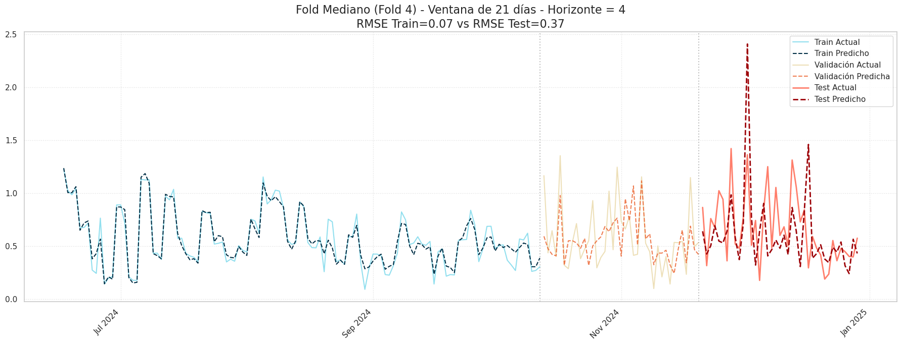
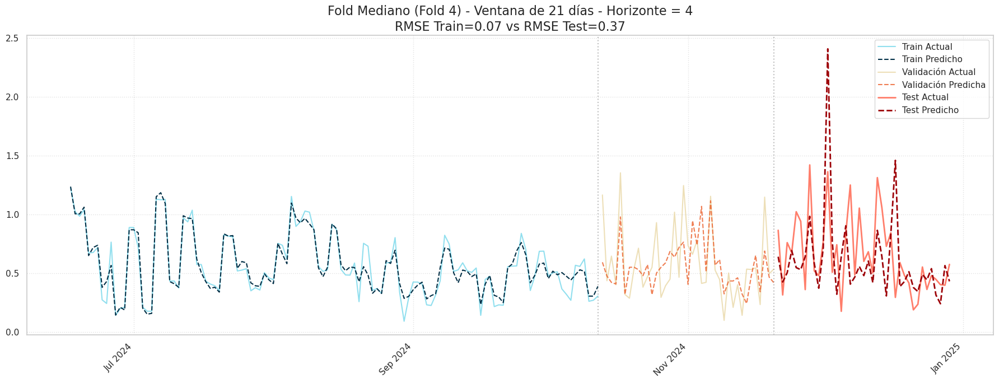
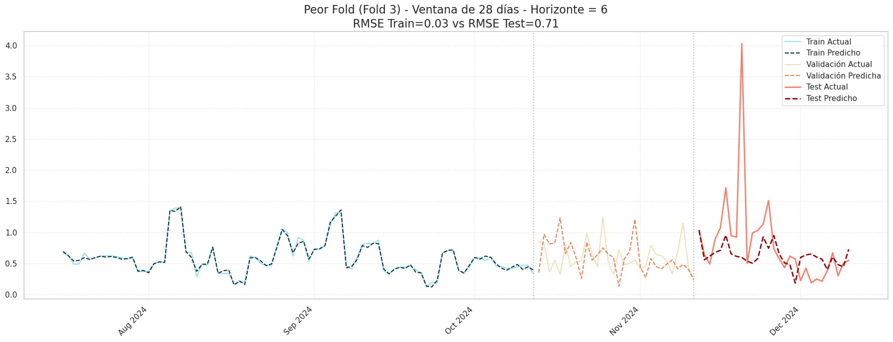
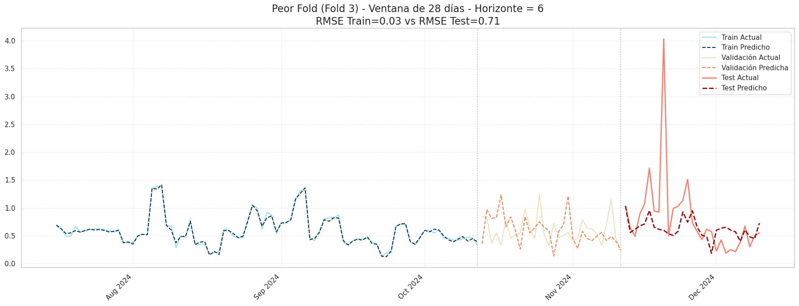
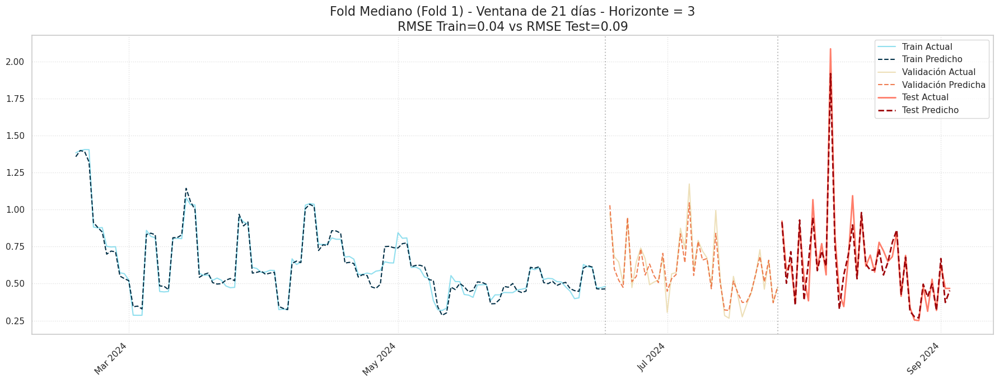
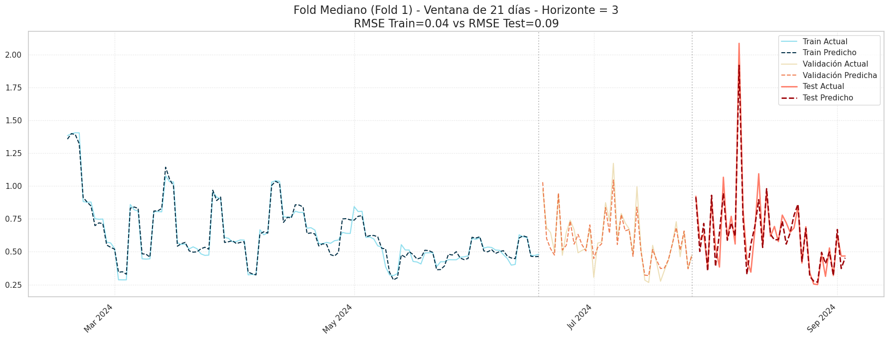

Modelos de predicción de la volatilidad para cada ventana (7, 14, 21 y 28 días)#
Librerías#
import os
import glob
import joblib
import numpy as np
import pandas as pd
import seaborn as sns
import tensorflow as tf
import matplotlib.pyplot as plt
import matplotlib.dates as mdates
from sklearn.pipeline import Pipeline
from statsmodels.tsa.stattools import bds
from sklearn.neural_network import MLPRegressor
from sklearn.preprocessing import StandardScaler
from sklearn.model_selection import PredefinedSplit
from sklearn.model_selection import GridSearchCV, GroupKFold
from tsxv.splitTrainValTest import split_train_val_test_groupKFold
from sklearn.metrics import mean_squared_error, mean_absolute_error, mean_absolute_percentage_error
import warnings
warnings.filterwarnings("ignore", category=UserWarning)
2025-09-27 23:41:16.532985: I tensorflow/core/util/port.cc:153] oneDNN custom operations are on. You may see slightly different numerical results due to floating-point round-off errors from different computation orders. To turn them off, set the environment variable `TF_ENABLE_ONEDNN_OPTS=0`.
2025-09-27 23:41:16.636179: I tensorflow/core/platform/cpu_feature_guard.cc:210] This TensorFlow binary is optimized to use available CPU instructions in performance-critical operations.
To enable the following instructions: AVX2 AVX_VNNI FMA, in other operations, rebuild TensorFlow with the appropriate compiler flags.
2025-09-27 23:41:18.399795: I tensorflow/core/util/port.cc:153] oneDNN custom operations are on. You may see slightly different numerical results due to floating-point round-off errors from different computation orders. To turn them off, set the environment variable `TF_ENABLE_ONEDNN_OPTS=0`.
print("Verificando disponibilidad de GPU...")
gpu_devices = tf.config.list_physical_devices('GPU')
if gpu_devices:
print("GPU detectada y configurada por TensorFlow.")
else:
print("ADVERTENCIA: No se detectó GPU. El modelo se entrenará en la CPU.")
Verificando disponibilidad de GPU...
GPU detectada y configurada por TensorFlow.
BASE_DIR = os.getcwd() # Esto es la carpeta notebooks
Base de datos#
data_path = os.path.join(BASE_DIR, '..', 'data', 'datamodelos.csv') # Ruta al archivo CSV
data = pd.read_csv(data_path)
data.set_index('Fecha', inplace=True)
data
| Precio | RetornoLog | Volatilidad_7d | Volatilidad_14d | Volatilidad_21d | Volatilidad_28d | |
|---|---|---|---|---|---|---|
| Fecha | ||||||
| 2018-01-29 | 11251.00 | -0.054395 | 0.690572 | 1.522041 | 1.371132 | 1.367343 |
| 2018-01-30 | 10237.51 | -0.094399 | 1.005329 | 1.143258 | 1.410198 | 1.351515 |
| 2018-01-31 | 10285.10 | 0.004638 | 0.895483 | 1.142321 | 1.395937 | 1.348702 |
| 2018-02-01 | 9224.52 | -0.108831 | 1.127962 | 1.259500 | 1.383471 | 1.388793 |
| 2018-02-02 | 8873.03 | -0.038849 | 1.117298 | 1.223554 | 1.365130 | 1.292856 |
| ... | ... | ... | ... | ... | ... | ... |
| 2025-02-02 | 99796.00 | -0.024038 | 0.319643 | 0.426355 | 0.448729 | 0.480990 |
| 2025-02-03 | 94495.21 | -0.054579 | 0.486452 | 0.504795 | 0.508193 | 0.498576 |
| 2025-02-04 | 101367.77 | 0.070206 | 0.764874 | 0.545473 | 0.581348 | 0.528412 |
| 2025-02-05 | 97589.30 | -0.037987 | 0.779201 | 0.565460 | 0.580056 | 0.542300 |
| 2025-02-06 | 98329.13 | 0.007552 | 0.776559 | 0.567925 | 0.580981 | 0.532689 |
2566 rows × 6 columns
Funciones importantes#
# Modelado y cálculo de métricas
def modelado(volatilidad, lags_list, n_steps_forecast, n_steps_jump):
results_path = os.path.join(BASE_DIR, 'results') # Carpeta para guardar CSVs de resultados
model_path = os.path.join(BASE_DIR, '..', 'app', 'modelos_finales') # Carpeta para guardar modelos
os.makedirs(results_path, exist_ok=True)
os.makedirs(model_path, exist_ok=True)
# Diccionario para guardar los DataFrames detallados de cada lag
dictdetalladolag = {}
# Lista para guardar los datos del reporte resumen
reporteresumen = []
# Lista para guardar los resultados de cada fold
resultadosfold = []
# Diccionario maestro donde quedará todo lo necesario para graficar
dictresultados = {}
# Diccionario para guardar modelos y scalers de cada combinación lag-fold
modelos_guardados = {}
# Serie temporal a modelar
timeSeries = data[f'Volatilidad_{volatilidad}d']
# Iteración sobre los lags
for n_steps_input in lags_list:
# División de datos respeyando temporalidad y grupos
X, y, Xcv, ycv, Xtest, ytest = split_train_val_test_groupKFold(
timeSeries, n_steps_input, n_steps_forecast, n_steps_jump
)
# Listas para almacenar resultados del lag actual
mape_folds, mae_folds, rmse_folds, mse_folds = [], [], [], []
bds_pvalues_folds = []
residuos_fold = []
# Listas para almacenar predicciones y reales de todos los folds
preds_train_folds, preds_val_folds, preds_test_folds = [], [], []
real_train_folds, real_val_folds, real_test_folds = [], [], []
# Iteración sobre los folds
for fold in range(len(X)):
# Se ajusta el scaler SOLO con los datos de entrenamiento del fold
scaler_x = StandardScaler().fit(X[fold])
scaler_y = StandardScaler().fit(y[fold])
# Se transforman todos los conjuntos con el scaler ajustado
X_train = scaler_x.transform(X[fold])
X_val = scaler_x.transform(Xcv[fold])
X_test = scaler_x.transform(Xtest[fold])
y_train = scaler_y.transform(y[fold])
y_val = scaler_y.transform(ycv[fold])
# Modelo MLP multistep
model = MLPRegressor(hidden_layer_sizes=(64,32), max_iter=300, activation='relu', random_state=fold)
model.fit(X_train, y_train)
# Guardar modelo y scalers temporalmente
modelos_guardados[f'vol_{volatilidad}_lag_{n_steps_input}_fold_{fold+1}'] = {
'model': model,
'scaler_x': scaler_x,
'scaler_y': scaler_y,
'n_steps_input': n_steps_input,
'n_steps_forecast': n_steps_forecast,
'n_steps_jump': n_steps_jump,
'volatilidad': volatilidad
}
#Predicciones
preds_train = model.predict(X_train)
preds_val = model.predict(X_val)
preds_test = model.predict(X_test)
# Desnormalización de predicciones
preds_train_des = scaler_y.inverse_transform(preds_train)
preds_val_des = scaler_y.inverse_transform(preds_val)
preds_test_des = scaler_y.inverse_transform(preds_test)
# Desnormalización de reales
y_train_des = scaler_y.inverse_transform(y_train)
y_val_des = scaler_y.inverse_transform(y_val)
# Test
y_test_des = ytest[fold]
# Prueba BDS en residuos del horizonte 1
residuos_h1 = y_test_des[:, 0] - preds_test_des[:, 0]
_, bds_pvalue = bds(residuos_h1, max_dim=2)
bds_pvalues_folds.append(bds_pvalue)
# Lista de residuos por fold
residuos_fold.append(y_test_des - preds_test_des)
# Guardar predicciones y reales de todos los folds
preds_train_folds.append(preds_train_des)
preds_val_folds.append(preds_val_des)
preds_test_folds.append(preds_test_des)
real_train_folds.append(y_train_des)
real_val_folds.append(y_val_des)
real_test_folds.append(y_test_des)
# Cálculo de métricas por horizonte
mape_h, mae_h, mse_h, rmse_h = [], [], [], []
# Iterar por cada horizonte
for h in range(n_steps_forecast):
y_true = y_test_des[:, h]
y_pred = preds_test_des[:, h]
# Evitar división por cero en MAPE. Cálculo de métricas
epsilon = 1e-8
mape_h.append(np.mean(np.abs((y_true - y_pred) / (y_true + epsilon))) * 100)
mae_h.append(mean_absolute_error(y_true, y_pred))
mse_val = mean_squared_error(y_true, y_pred)
mse_h.append(mse_val)
rmse_h.append(np.sqrt(mse_val))
# Guardar métricas del fold actual
mape_folds.append(mape_h)
mae_folds.append(mae_h)
mse_folds.append(mse_h)
rmse_folds.append(rmse_h)
# Guardar predicciones y reales del fold actual
dictdetalladolag.setdefault(f'lag_{n_steps_input}_predicciones', {})[f'fold_{fold+1}'] = {
"y_test_real": y_test_des.tolist(),
"y_pred_test": preds_test_des.tolist()
}
# Guardar métricas promedio del fold (sobre horizontes)
resultadosfold.append({
"Lag": n_steps_input,
"Fold": fold + 1,
"MAPE": np.mean(mape_h),
"MAE": np.mean(mae_h),
"RMSE": np.mean(rmse_h),
"MSE": np.mean(mse_h),
"BDS_pvalue": bds_pvalue
})
# Reportes detallados por lag
if mape_folds: # Verificar que no esté vacío
horizontes = [f'H{h+1}' for h in range(n_steps_forecast)]
metricas = ['MAPE', 'MAE', 'RMSE', 'MSE']
# Crear MultiIndex para las columnas
multi_cols = pd.MultiIndex.from_product([horizontes, metricas], names=['Horizonte', 'Métrica'])
# Organizar los datos para el DataFrame
datatabla = []
for i in range(len(X)): # Iterar por cada fold
fila = []
for j in range(n_steps_forecast): # Iterar por cada horizonte
fila.append(mape_folds[i][j])
fila.append(mae_folds[i][j])
fila.append(rmse_folds[i][j])
fila.append(mse_folds[i][j])
datatabla.append(fila)
# DataFrame con métricas
df_metricas = pd.DataFrame(datatabla, columns=multi_cols)
df_metricas.index = [f'Fold {i+1}' for i in range(len(X))]
# DataFrame con BDS como primera columna
df_bds = pd.DataFrame({
'BDS_pvalue_H1': bds_pvalues_folds
}, index=df_metricas.index)
# Unión de ambos DataFrames
datacompleta = pd.concat([df_bds, df_metricas], axis=1)
# Calcular Mean ± Std para cada columna (horizonte-métrica)
mean_row = {}
for col in datacompleta.columns:
if isinstance(col, tuple): # Para columnas MultiIndex
col_data = datacompleta[col].values
else: # Para columna BDS
col_data = datacompleta[col].values
mean_val = np.mean(col_data)
std_val = np.std(col_data)
if col == 'BDS_pvalue_H1':
mean_row[col] = f"{mean_val:.4f} ± {std_val:.4f}"
else:
mean_row[col] = f"{mean_val:.3f} ± {std_val:.3f}"
# Agregar fila Mean ± Std al final del DataFrame
df_mean_std = pd.DataFrame([mean_row], index=['Mean ± Std'])
datacompleta = pd.concat([datacompleta, df_mean_std])
# Guardar DataFrame detallado en el diccionario
dictdetalladolag[f'lag_{n_steps_input}'] = datacompleta
# Reporte resumen promedio por lag (promedio sobre folds y horizontes)
resumenfila = {
'Lag': n_steps_input,
'MAPE_Promedio': np.mean(mape_folds),
'MAE_Promedio': np.mean(mae_folds),
'RMSE_Promedio': np.mean(rmse_folds),
'MSE_Promedio': np.mean(mse_folds),
'BDS_pvalue_Promedio': np.mean(bds_pvalues_folds)
}
reporteresumen.append(resumenfila)
# Diccionario maestro de resultados
dictresultados[n_steps_input] = {
"reals": {
"train": real_train_folds,
"val": real_val_folds,
"test": real_test_folds
},
"preds": {
"train": preds_train_folds,
"val": preds_val_folds,
"test": preds_test_folds
},
"original_df": data,
"bds_pvalues": bds_pvalues_folds,
"residuos": residuos_fold
}
# DataFrame resumen final
dataresumen = pd.DataFrame(reporteresumen).set_index('Lag')
# Guardar resultados en CSVs en la carpeta results
for lag, df_report in dictdetalladolag.items():
if isinstance(df_report, pd.DataFrame):
# Guardar cada DataFrame detallado por lag
df_report.to_csv(os.path.join(results_path, f'vol{volatilidad}d_reporte_detallado_{lag}.csv'))
# Guardar el reporte resumen final de cada volatilidad
dataresumen.to_csv(os.path.join(results_path, f'vol{volatilidad}_reporte_resumen_promedio.csv'))
# Análisis para identificar el mejor modelo y guardarlo
# Identificar el mejor lag basado en el menor RMSE promedio
mejor_lag = dataresumen['RMSE_Promedio'].idxmin()
mejor_lag_rmse = dataresumen.loc[mejor_lag, 'RMSE_Promedio']
print(f"\n El mejor modelo para la volatilidad de {volatilidad} días está en el lag de {mejor_lag} días. (RMSE promedio: {mejor_lag_rmse:.4f})")
# Mejor fold dentro del mejor lag
df_folds = pd.DataFrame(resultadosfold)
folds_mejor_lag = df_folds[df_folds['Lag'] == mejor_lag]
idx_mejor_fold = folds_mejor_lag['RMSE'].idxmin()
mejor_fold_info = folds_mejor_lag.loc[idx_mejor_fold]
print(f"\nDentro del lag {mejor_lag}, el mejor fold es el Fold {int(mejor_fold_info['Fold'])} con RMSE: {mejor_fold_info['RMSE']:.4f}\n")
# Guardar la información del mejor fold
key_mejor_modelo = f'vol_{volatilidad}_lag_{mejor_lag}_fold_{int(mejor_fold_info["Fold"])}'
mejor_modelo_data = modelos_guardados[key_mejor_modelo]
# Diccionario con todo lo necesario para la API
modelo_para_api = {
'modelo': mejor_modelo_data['model'],
'scaler_x': mejor_modelo_data['scaler_x'],
'scaler_y': mejor_modelo_data['scaler_y'],
'parametros': {
'volatilidad': volatilidad,
'lag': mejor_lag,
'fold': int(mejor_fold_info['Fold']),
'n_steps_input': mejor_modelo_data['n_steps_input'],
'n_steps_forecast': mejor_modelo_data['n_steps_forecast'],
'n_steps_jump': mejor_modelo_data['n_steps_jump']
},
'metricas': {
'RMSE': mejor_fold_info['RMSE'],
'MAE': mejor_fold_info['MAE'],
'MAPE': mejor_fold_info['MAPE'],
'MSE': mejor_fold_info['MSE'],
'BDS_pvalue': mejor_fold_info['BDS_pvalue']
},
'residuos_mejor_fold' : dictresultados[mejor_lag]['residuos'][int(mejor_fold_info['Fold']) - 1]
}
# Guardar el mejor modelo con joblib en la carpeta modelos_finales
modelo_filename = os.path.join(model_path, f'mejor_modelo_vol{volatilidad}d.joblib')
joblib.dump(modelo_para_api, modelo_filename)
return {
'reportes_detallados': dictdetalladolag,
'reporte_resumen': dataresumen,
'results_all': dictresultados,
'reporte_folds': pd.DataFrame(resultadosfold),
'mejor_modelo': modelo_para_api
}
# Gráficos de real vs predicho
def graficos(lags_list, results_all, results_df, n_steps_forecast, n_steps_jump, volatilidad):
# Carpeta para guardar las imágenes
figs_path = f'figs/volatilidad_{volatilidad}d'
os.makedirs(figs_path, exist_ok=True)
# Función para graficar predicciones vs reales por fold y horizonte
def prediccionesfold(fold_idx, fold_name, results, lag_seleccionado,
n_steps_forecast, n_steps_jump, horizon_to_plot=0):
# Datos reales
real_train = results['reals']['train'][fold_idx][:, horizon_to_plot]
real_val = results['reals']['val'][fold_idx][:, horizon_to_plot]
real_test = results['reals']['test'][fold_idx][:, horizon_to_plot]
# Datos predichos
preds_train = results['preds']['train'][fold_idx][:, horizon_to_plot]
preds_val = results['preds']['val'][fold_idx][:, horizon_to_plot]
preds_test = results['preds']['test'][fold_idx][:, horizon_to_plot]
# Datos del DataFrame original para índices temporales
original_df = results['original_df']
n_splits = len(results['reals']['train'])
n_test = len(real_test)
n_val = len(real_val)
# Construcción de índices temporales
test_start_idx = len(original_df) - (n_splits - fold_idx) * (n_test * n_steps_jump)
val_start_idx = test_start_idx - n_val
train_end_idx = val_start_idx
train_start_idx = max(0, train_end_idx - len(real_train))
# Índices temporales para cada conjunto conversión a datetime
train_timestamps = pd.to_datetime(original_df.index[train_start_idx:train_end_idx])
val_timestamps = pd.to_datetime(original_df.index[val_start_idx:test_start_idx])
test_timestamps = pd.to_datetime(original_df.index[test_start_idx:test_start_idx + n_test])
# Cálculo de RMSE para título (train y test)
rmse_train = np.sqrt(mean_squared_error(
real_train[-len(train_timestamps):],
preds_train[-len(train_timestamps):]
))
rmse_test = np.sqrt(mean_squared_error(real_test, preds_test))
# Gráfica de serie temporal de real vs predicho
fig, ax = plt.subplots(figsize=(18, 7))
ax.set_title(f"{fold_name} - Ventana de {lag_seleccionado} días - Horizonte = {horizon_to_plot+1}\n"
f"RMSE Train={rmse_train:.2f} vs RMSE Test={rmse_test:.2f}",
fontsize=16)
# Train
ax.plot(train_timestamps, real_train[-len(train_timestamps):],
label='Train Actual', color='#48cae4', alpha=0.6)
ax.plot(train_timestamps, preds_train[-len(train_timestamps):],
label='Train Predicho', color='#023047', linestyle='--')
# Validación
ax.plot(val_timestamps, real_val, label='Validación Actual',
color='#e9d8a6', alpha=0.8)
ax.plot(val_timestamps, preds_val, label='Validación Predicha',
color='#eb5e28', linestyle='--', alpha=0.8)
# Test
ax.plot(test_timestamps, real_test, label='Test Actual',
color='#ff7e6b', lw=2)
ax.plot(test_timestamps, preds_test, label='Test Predicho',
color='#9d0208', linestyle='--', lw=2)
# Formateo del eje x según el rango de fechas
all_dates = pd.concat([
pd.Series(train_timestamps),
pd.Series(val_timestamps),
pd.Series(test_timestamps)
])
date_range_days = (all_dates.max() - all_dates.min()).days
# Ajustar el localizador según el rango de fechas
if date_range_days <= 30: # Menos de un mes
ax.xaxis.set_major_locator(mdates.DayLocator(interval=5))
ax.xaxis.set_major_formatter(mdates.DateFormatter('%d/%m'))
elif date_range_days <= 180: # Menos de 6 meses
ax.xaxis.set_major_locator(mdates.MonthLocator())
ax.xaxis.set_major_formatter(mdates.DateFormatter('%b %Y'))
elif date_range_days <= 730: # Menos de 2 años
ax.xaxis.set_major_locator(mdates.MonthLocator(interval=2))
ax.xaxis.set_major_formatter(mdates.DateFormatter('%b %Y'))
else: # Más de 2 años
ax.xaxis.set_major_locator(mdates.MonthLocator(interval=3))
ax.xaxis.set_major_formatter(mdates.DateFormatter('%b %Y'))
# Rotar etiquetas
plt.setp(ax.xaxis.get_majorticklabels(), rotation=45, ha='right')
# Líneas verticales para separar conjuntos
if len(train_timestamps) > 0:
ax.axvline(x=train_timestamps[-1], color='gray', linestyle=':', alpha=0.5, label='_nolegend_')
ax.axvline(x=val_timestamps[-1], color='gray', linestyle=':', alpha=0.5, label='_nolegend_')
ax.legend()
ax.grid(True, linestyle=':', alpha=0.6)
# Ajustar layout
plt.tight_layout()
# Guardar la imagen en la carpeta de figs
safe_fold_name = fold_name.replace(' ', '_').replace('(', '').replace(')', '')
file_name = f'vol{volatilidad}d_prediccion_{safe_fold_name}_lag{lag_seleccionado}_h{horizon_to_plot+1}.png'
full_path_to_save = os.path.join(figs_path, file_name)
plt.savefig(full_path_to_save, bbox_inches='tight', dpi=150)
plt.show()
# Seleccionar el lag con mejor RMSE promedio
lag_seleccionado = lags_list[0]
results = results_all[lag_seleccionado]
# Identificar los folds mejor, peor y mediano basado en RMSE promedio
mean_rmse_per_fold = results_df.groupby('Fold')['RMSE'].mean().sort_values()
best_fold_idx = mean_rmse_per_fold.index[0] - 1
worst_fold_idx = mean_rmse_per_fold.index[-1] - 1
median_fold_idx = mean_rmse_per_fold.index[len(mean_rmse_per_fold) // 2] - 1
# Diccionario con los folds a graficar
folds_to_plot = {
f'Mejor Fold (Fold {best_fold_idx + 1})': best_fold_idx,
f'Fold Mediano (Fold {median_fold_idx + 1})': median_fold_idx,
f'Peor Fold (Fold {worst_fold_idx + 1})': worst_fold_idx,
}
# Graficar y guardar imágenes por fold y horizonte
for name, idx in folds_to_plot.items():
for h in range(n_steps_forecast): # loop para graficar todos los horizontes
prediccionesfold(
fold_idx=idx,
fold_name=name,
results=results,
lag_seleccionado=lag_seleccionado,
n_steps_forecast=n_steps_forecast,
n_steps_jump=n_steps_jump,
horizon_to_plot=h
)
plt.show()
# Transformación de DataFrame detallado para gráficos de RMSE por horizonte
def rmsehorizonte(df_detallado, n_steps_forecast):
# Lista para almacenar los datos transformados
data_list = []
# Excluir la fila 'Mean ± Std'
datanoprom = df_detallado[df_detallado.index != 'Mean ± Std']
# Iterar por cada fold y cada horizonte
for fold_name in datanoprom.index:
fold_num = int(fold_name.split()[-1])
for h in range(1, n_steps_forecast + 1):
# La columna es una tupla
col_tuple = (f'H{h}', 'RMSE')
# Acceder directamente usando la tupla como clave
rmse_value = float(datanoprom[col_tuple].loc[fold_name])
# Agregar a la lista
data_list.append({
'Fold': fold_num,
'Horizonte': h,
'RMSE': rmse_value
})
return pd.DataFrame(data_list)
# Gráficos de análisis de RMSE
def rmsegraficos(results_df, nombre_experimento=""):
# Carpeta para guardar las imágenes
figs_path = 'figs'
os.makedirs(figs_path, exist_ok=True)
sns.set_theme(style="whitegrid")
# Crear figura con dos subplots
fig, axes = plt.subplots(1, 2, figsize=(18, 6))
# Título general
titulo_figura = f'Análisis de RMSE para {nombre_experimento}' if nombre_experimento else 'Análisis de RMSE'
fig.suptitle(titulo_figura, fontsize=18, weight='bold')
# Gráfico 1: RMSE promedio por Fold - Diagrama de barras
ax1 = axes[0]
sns.barplot(data=results_df, x="Fold", y="RMSE", ax=ax1, errorbar=None, color="#0096c7")
ax1.set_title("RMSE Promedio por Fold", fontsize=14, weight='bold')
ax1.set_xlabel("Fold", fontsize=12)
ax1.set_ylabel("RMSE Promedio", fontsize=12)
for p in ax1.patches:
ax1.annotate(f'{p.get_height():.3f}',
(p.get_x() + p.get_width() / 2., p.get_height()),
ha='center', va='center', xytext=(0, 9),
textcoords='offset points', fontsize=10)
# Gráfico 2: RMSE promedio por Horizonte - Línea con puntos
ax2 = axes[1]
sns.lineplot(data=results_df, x="Horizonte", y="RMSE", ax=ax2, marker="o", linestyle="-", errorbar=None, color="#0096c7")
ax2.set_title("RMSE Promedio por Horizonte de Predicción", fontsize=14, weight='bold')
ax2.set_xlabel("Horizonte (pasos de tiempo)", fontsize=12)
ax2.set_ylabel("RMSE Promedio", fontsize=12)
ax2.set_xticks(results_df['Horizonte'].unique())
plt.tight_layout(rect=[0, 0, 1, 0.96])
# Guardar la imagen en la carpeta figs
safe_name = nombre_experimento.replace(' ', '_').lower() if nombre_experimento else 'default'
file_name = f'analisis_rmse_{safe_name}.png'
full_path_to_save = os.path.join(figs_path, file_name)
plt.savefig(full_path_to_save, bbox_inches='tight')
plt.show()
rmse_fold = results_df.groupby("Fold")["RMSE"].mean()
rmse_horizonte = results_df.groupby("Horizonte")["RMSE"].mean()
return rmse_fold, rmse_horizonte
# Función principal para mostrar resultados de una ventana de volatilidad
def resultadosventana(volatilidad, lags_list, n_steps_forecast, n_steps_jump):
print("Resultados para la ventana de volatilidad de", volatilidad, "días")
# Llamar a la función de modelado
resultados = modelado(volatilidad, lags_list, n_steps_forecast, n_steps_jump)
# Iterar por cada lag
for lag in lags_list:
print("Análisis para el lag de", lag, "días")
print(f"\n Métricas detalladas\n")
# Mostrar reporte detallado del lag
lag_key = f'lag_{lag}'
if lag_key in resultados['reportes_detallados']:
display(resultados['reportes_detallados'][lag_key])
# Filtrar results_df para el lag actual
results_df_lag = resultados['reporte_folds'][resultados['reporte_folds']['Lag'] == lag]
# Llamar a la función de gráficos solo para este lag
graficos(
lags_list=[lag],
results_all=resultados['results_all'],
results_df=results_df_lag,
n_steps_forecast=n_steps_forecast,
n_steps_jump=n_steps_jump,
volatilidad=volatilidad
)
# Análisis RMSE para este lag
print(f"\n Análisis de RMSE para Lag {lag}:")
df_detallado = resultados['reportes_detallados'][f'lag_{lag}']
results_df_lag = rmsehorizonte(df_detallado, n_steps_forecast)
rmse_fold, rmse_horizonte = rmsegraficos(
results_df_lag,
nombre_experimento=f"Volatilidad {volatilidad}d - Lag {lag}"
)
print(f"\n Resumen final para la volatilidad de {volatilidad} días:")
print("\n Comparación de todos los lags:")
display(resultados['reporte_resumen'])
return resultados
Modelos de predicción por volatilidad#
Volatilidad de la ventana de 7 días#
# Para volatilidad de 7 días
resultados_7d = resultadosventana(
volatilidad=7,
lags_list=[7, 14, 21, 28],
n_steps_forecast=7,
n_steps_jump=1
)
Resultados para la ventana de volatilidad de 7 días
El mejor modelo para la volatilidad de 7 días está en el lag de 7 días. (RMSE promedio: 0.2531)
Dentro del lag 7, el mejor fold es el Fold 1 con RMSE: 0.2083
Análisis para el lag de 7 días
Métricas detalladas
| BDS_pvalue_H1 | (H1, MAPE) | (H1, MAE) | (H1, RMSE) | (H1, MSE) | (H2, MAPE) | (H2, MAE) | (H2, RMSE) | (H2, MSE) | (H3, MAPE) | ... | (H5, RMSE) | (H5, MSE) | (H6, MAPE) | (H6, MAE) | (H6, RMSE) | (H6, MSE) | (H7, MAPE) | (H7, MAE) | (H7, RMSE) | (H7, MSE) | |
|---|---|---|---|---|---|---|---|---|---|---|---|---|---|---|---|---|---|---|---|---|---|
| Fold 1 | 0.3573422471776194 | 15.238803 | 0.074771 | 0.10365 | 0.010743 | 20.777234 | 0.107749 | 0.151557 | 0.022969 | 29.595715 | ... | 0.234965 | 0.055209 | 51.363471 | 0.214299 | 0.266845 | 0.071206 | 51.854651 | 0.206969 | 0.267076 | 0.07133 |
| Fold 2 | 0.8723641689240013 | 22.53021 | 0.091687 | 0.13942 | 0.019438 | 23.411413 | 0.10522 | 0.144791 | 0.020965 | 29.14856 | ... | 0.244574 | 0.059816 | 44.967234 | 0.197451 | 0.247736 | 0.061373 | 56.974131 | 0.226137 | 0.275207 | 0.075739 |
| Fold 3 | 0.2917275983065136 | 17.641918 | 0.07268 | 0.095009 | 0.009027 | 32.969449 | 0.122193 | 0.15458 | 0.023895 | 33.122934 | ... | 0.267544 | 0.07158 | 45.217253 | 0.204059 | 0.295126 | 0.087099 | 52.93439 | 0.22793 | 0.296491 | 0.087907 |
| Fold 4 | 0.6078380304825228 | 21.952029 | 0.102976 | 0.23958 | 0.057399 | 31.875664 | 0.132362 | 0.247882 | 0.061445 | 44.625223 | ... | 0.257445 | 0.066278 | 50.989118 | 0.218504 | 0.270468 | 0.073153 | 50.761334 | 0.216218 | 0.26052 | 0.067871 |
| Fold 5 | 0.6347282357540948 | 22.130944 | 0.114576 | 0.296114 | 0.087684 | 30.109371 | 0.141644 | 0.339554 | 0.115297 | 31.292934 | ... | 0.38089 | 0.145077 | 45.081652 | 0.223537 | 0.407631 | 0.166163 | 47.322714 | 0.244423 | 0.43033 | 0.185184 |
| Mean ± Std | 0.5528 ± 0.2089 | 19.899 ± 2.930 | 0.091 ± 0.016 | 0.175 ± 0.079 | 0.037 ± 0.031 | 27.829 ± 4.842 | 0.122 ± 0.014 | 0.208 ± 0.076 | 0.049 ± 0.036 | 33.557 ± 5.709 | ... | 0.277 ± 0.053 | 0.080 ± 0.033 | 47.524 ± 2.986 | 0.212 ± 0.010 | 0.298 ± 0.057 | 0.092 ± 0.038 | 51.969 ± 3.132 | 0.224 ± 0.013 | 0.306 ± 0.063 | 0.098 ± 0.044 |
6 rows × 29 columns


Análisis de RMSE para Lag 7:

Análisis para el lag de 14 días
Métricas detalladas
| BDS_pvalue_H1 | (H1, MAPE) | (H1, MAE) | (H1, RMSE) | (H1, MSE) | (H2, MAPE) | (H2, MAE) | (H2, RMSE) | (H2, MSE) | (H3, MAPE) | ... | (H5, RMSE) | (H5, MSE) | (H6, MAPE) | (H6, MAE) | (H6, RMSE) | (H6, MSE) | (H7, MAPE) | (H7, MAE) | (H7, RMSE) | (H7, MSE) | |
|---|---|---|---|---|---|---|---|---|---|---|---|---|---|---|---|---|---|---|---|---|---|
| Fold 1 | 0.786171706863334 | 18.866746 | 0.102671 | 0.138047 | 0.019057 | 36.975347 | 0.148065 | 0.202267 | 0.040912 | 42.559154 | ... | 0.367235 | 0.134862 | 58.516714 | 0.228399 | 0.294715 | 0.086857 | 59.398011 | 0.208979 | 0.264058 | 0.069726 |
| Fold 2 | 0.003875616376311665 | 21.735307 | 0.092579 | 0.129508 | 0.016772 | 24.690337 | 0.121276 | 0.159888 | 0.025564 | 48.544126 | ... | 0.3071 | 0.094311 | 66.733357 | 0.268996 | 0.330529 | 0.10925 | 64.52592 | 0.262166 | 0.311231 | 0.096865 |
| Fold 3 | 0.02555990912284071 | 18.79625 | 0.095731 | 0.13487 | 0.01819 | 32.033766 | 0.154456 | 0.1954 | 0.038181 | 29.97592 | ... | 0.291453 | 0.084945 | 62.846685 | 0.255462 | 0.305514 | 0.093339 | 66.765874 | 0.264599 | 0.319646 | 0.102173 |
| Fold 4 | 0.9669874749771399 | 20.888126 | 0.109981 | 0.153645 | 0.023607 | 26.589719 | 0.151692 | 0.202859 | 0.041152 | 35.237551 | ... | 0.324337 | 0.105194 | 63.113553 | 0.26341 | 0.335803 | 0.112764 | 63.616442 | 0.264621 | 0.32165 | 0.103459 |
| Fold 5 | 0.7229705913926121 | 17.819611 | 0.089363 | 0.134614 | 0.018121 | 31.217012 | 0.144032 | 0.211978 | 0.044935 | 34.812741 | ... | 0.332302 | 0.110424 | 46.585183 | 0.256897 | 0.366367 | 0.134225 | 52.50519 | 0.275291 | 0.38137 | 0.145443 |
| Mean ± Std | 0.5011 ± 0.4052 | 19.621 ± 1.454 | 0.098 ± 0.007 | 0.138 ± 0.008 | 0.019 ± 0.002 | 30.301 ± 4.328 | 0.144 ± 0.012 | 0.194 ± 0.018 | 0.038 ± 0.007 | 38.226 ± 6.540 | ... | 0.324 ± 0.026 | 0.106 ± 0.017 | 59.559 ± 6.990 | 0.255 ± 0.014 | 0.327 ± 0.025 | 0.107 ± 0.017 | 61.362 ± 5.032 | 0.255 ± 0.024 | 0.320 ± 0.037 | 0.104 ± 0.024 |
6 rows × 29 columns
Análisis de RMSE para Lag 14:
Análisis para el lag de 21 días
Métricas detalladas
| BDS_pvalue_H1 | (H1, MAPE) | (H1, MAE) | (H1, RMSE) | (H1, MSE) | (H2, MAPE) | (H2, MAE) | (H2, RMSE) | (H2, MSE) | (H3, MAPE) | ... | (H5, RMSE) | (H5, MSE) | (H6, MAPE) | (H6, MAE) | (H6, RMSE) | (H6, MSE) | (H7, MAPE) | (H7, MAE) | (H7, RMSE) | (H7, MSE) | |
|---|---|---|---|---|---|---|---|---|---|---|---|---|---|---|---|---|---|---|---|---|---|
| Fold 1 | 0.3087665670435271 | 20.385181 | 0.124406 | 0.188472 | 0.035522 | 33.799101 | 0.189254 | 0.281072 | 0.079001 | 38.613467 | ... | 0.278815 | 0.077738 | 54.465661 | 0.25774 | 0.321131 | 0.103125 | 56.749522 | 0.25697 | 0.324556 | 0.105336 |
| Fold 2 | 0.43066289269018243 | 21.53363 | 0.134695 | 0.193087 | 0.037283 | 30.221228 | 0.180406 | 0.264838 | 0.070139 | 47.495294 | ... | 0.386095 | 0.14907 | 59.809811 | 0.301508 | 0.388156 | 0.150665 | 61.249767 | 0.312899 | 0.400607 | 0.160486 |
| Fold 3 | 0.15384954575968998 | 21.061054 | 0.126334 | 0.1887 | 0.035608 | 31.068133 | 0.208848 | 0.332663 | 0.110665 | 41.86436 | ... | 0.365769 | 0.133787 | 60.520711 | 0.299956 | 0.413617 | 0.171079 | 60.601419 | 0.302891 | 0.361888 | 0.130963 |
| Fold 4 | 0.2667602188520407 | 23.722238 | 0.128517 | 0.186549 | 0.0348 | 31.597065 | 0.166575 | 0.265638 | 0.070563 | 38.843671 | ... | 0.414943 | 0.172178 | 59.542646 | 0.27923 | 0.357008 | 0.127454 | 60.248538 | 0.287206 | 0.385914 | 0.14893 |
| Fold 5 | 0.1634940329185175 | 29.993014 | 0.156845 | 0.184957 | 0.034209 | 39.399579 | 0.183586 | 0.229062 | 0.052469 | 53.408962 | ... | 0.281603 | 0.0793 | 64.36282 | 0.212302 | 0.269306 | 0.072526 | 61.049383 | 0.194933 | 0.240587 | 0.057882 |
| Mean ± Std | 0.2647 ± 0.1020 | 23.339 ± 3.510 | 0.134 ± 0.012 | 0.188 ± 0.003 | 0.035 ± 0.001 | 33.217 ± 3.310 | 0.186 ± 0.014 | 0.275 ± 0.034 | 0.077 ± 0.019 | 44.045 ± 5.673 | ... | 0.345 ± 0.056 | 0.122 ± 0.038 | 59.740 ± 3.157 | 0.270 ± 0.033 | 0.350 ± 0.051 | 0.125 ± 0.035 | 59.980 ± 1.652 | 0.271 ± 0.042 | 0.343 ± 0.057 | 0.121 ± 0.037 |
6 rows × 29 columns

 


Análisis de RMSE para Lag 21:
Análisis para el lag de 28 días
Métricas detalladas
| BDS_pvalue_H1 | (H1, MAPE) | (H1, MAE) | (H1, RMSE) | (H1, MSE) | (H2, MAPE) | (H2, MAE) | (H2, RMSE) | (H2, MSE) | (H3, MAPE) | ... | (H5, RMSE) | (H5, MSE) | (H6, MAPE) | (H6, MAE) | (H6, RMSE) | (H6, MSE) | (H7, MAPE) | (H7, MAE) | (H7, RMSE) | (H7, MSE) | |
|---|---|---|---|---|---|---|---|---|---|---|---|---|---|---|---|---|---|---|---|---|---|
| Fold 1 | 0.3752657816598237 | 39.731798 | 0.200782 | 0.339214 | 0.115066 | 49.094874 | 0.235103 | 0.354728 | 0.125832 | 49.438777 | ... | 0.548752 | 0.301129 | 48.978869 | 0.325893 | 0.402834 | 0.162275 | 49.456298 | 0.330487 | 0.442117 | 0.195468 |
| Fold 2 | 0.09902133053253061 | 32.781468 | 0.181306 | 0.330438 | 0.109189 | 49.620749 | 0.249215 | 0.393799 | 0.155078 | 63.562157 | ... | 0.538496 | 0.289978 | 49.450868 | 0.368586 | 0.597123 | 0.356556 | 54.846932 | 0.366591 | 0.487572 | 0.237727 |
| Fold 3 | 0.5727490996805245 | 39.818873 | 0.241477 | 0.520496 | 0.270916 | 54.233254 | 0.289024 | 0.609196 | 0.37112 | 67.499022 | ... | 0.726757 | 0.528175 | 51.631513 | 0.368003 | 0.713504 | 0.509087 | 54.771616 | 0.388751 | 0.725731 | 0.526686 |
| Fold 4 | 0.010084530495730206 | 35.092381 | 0.179159 | 0.28524 | 0.081362 | 50.656134 | 0.304723 | 0.593859 | 0.352669 | 57.8489 | ... | 0.747483 | 0.558731 | 80.681766 | 0.472597 | 0.776001 | 0.602178 | 61.590372 | 0.438663 | 0.796165 | 0.633878 |
| Fold 5 | 9.768429453868598e-05 | 52.367371 | 0.250853 | 0.304252 | 0.092569 | 70.080445 | 0.32403 | 0.432005 | 0.186629 | 83.396725 | ... | 0.602719 | 0.36327 | 92.376372 | 0.455028 | 0.578395 | 0.334541 | 107.923964 | 0.492309 | 0.690567 | 0.476883 |
| Mean ± Std | 0.2114 ± 0.2259 | 39.958 ± 6.771 | 0.211 ± 0.030 | 0.356 ± 0.084 | 0.134 ± 0.070 | 54.737 ± 7.878 | 0.280 ± 0.033 | 0.477 ± 0.105 | 0.238 ± 0.103 | 64.349 ± 11.295 | ... | 0.633 ± 0.088 | 0.408 ± 0.114 | 64.624 ± 18.286 | 0.398 ± 0.056 | 0.614 ± 0.128 | 0.393 ± 0.152 | 65.718 ± 21.451 | 0.403 ± 0.057 | 0.628 ± 0.139 | 0.414 ± 0.170 |
6 rows × 29 columns
 

Análisis de RMSE para Lag 28:
Resumen final para la volatilidad de 7 días:
Comparación de todos los lags:
| MAPE_Promedio | MAE_Promedio | RMSE_Promedio | MSE_Promedio | BDS_pvalue_Promedio | |
|---|---|---|---|---|---|
| Lag | |||||
| 7 | 36.943658 | 0.166657 | 0.253073 | 0.070197 | 0.552800 |
| 14 | 44.207137 | 0.197667 | 0.261609 | 0.073887 | 0.501113 |
| 21 | 46.923649 | 0.227720 | 0.315340 | 0.106469 | 0.264707 |
| 28 | 60.498948 | 0.341295 | 0.540169 | 0.313305 | 0.211444 |
Interpretaciones#
Lag 7 días#
Este lag presentó el mejor desempeño promedio entre las ventanas analizadas, con un RMSE promedio de 0.2531 para el modelo correspondiente a la volatilidad de 7 días. Su mejor Fold fue el 1, con un RMSE de 0.2083. Se observa que el RMSE tiende a aumentar a medida que avanza el horizonte de predicción, indicando que el modelo predice con mayor precisión los días más cercanos. Asimismo, el RMSE promedio por Fold también aumenta progresivamente, siendo el Fold 1 el mejor del modelo en general.
Lag 14 días#
Los modelos para esta ventana obtuvieron un RMSE promedio de 0.2616, posicionándose como el segundo mejor desempeño. El mejor Fold fue el 3, con un RMSE de 0.246. Al igual que en el lag de 7 días, los RMSE tienden a aumentar a medida que avanzan los horizontes; sin embargo, en el último horizonte se observa una ligera disminución. Por Fold, los RMSE crecen en general, excepto en el Fold 3, que presentó el menor valor.
Lag 21 días#
Para esta ventana, el RMSE promedio se incrementó a 0.3153, reflejando un rendimiento menor respecto a los lags anteriores. El mejor Fold fue el 5, con un RMSE de 0.248. Analizando los RMSE por horizonte, se observa un aumento progresivo hasta el horizonte 4 el cual tuvo el peor desempeño, seguido de una ligera disminución y estabilidad en los horizontes restantes. Por Fold, el RMSE promedio aumenta significativamente del Fold 1 al Fold 2 (siendo este último el peor) y luego disminuye gradualmente en los Folds posteriores.
Lag 28 días#
El lag de 28 días presentó el peor desempeño entre los cuatro analizados, con un RMSE promedio de 0.540. Su mejor Fold fue el 1, con un RMSE de 0.413, lo que refleja una diferencia notable respecto a los demás Folds.Al analizar los promedios por Fold, se observa un aumento progresivo hasta el Fold 3, que fue el de peor desempeño, seguido de una ligera disminución en los Folds restantes. Por horizonte, el RMSE aumenta hasta alcanzar el peor valor en el horizonte 5, mientras que los demás horizontes muestran valores relativamente más bajos y estables.
General#
De manera general, se observa que los mejores Folds de cada lag lograron aproximarse de manera destacada a los valores reales, ya que las líneas predichas siguen en la mayoría de los casos los patrones de los datos. Por otro lado, los Folds con menor desempeño mostraron una capacidad de predicción más limitada, reflejándose en desviaciones más notables respecto a los valores observados.
Volatilidad de la ventana de 14 días#
# Para volatilidad de 14 días
resultados_14d = resultadosventana(
volatilidad=14,
lags_list=[7, 14, 21, 28],
n_steps_forecast=7,
n_steps_jump=1
)
Resultados para la ventana de volatilidad de 14 días
El mejor modelo para la volatilidad de 14 días está en el lag de 14 días. (RMSE promedio: 0.1609)
Dentro del lag 14, el mejor fold es el Fold 4 con RMSE: 0.1414
Análisis para el lag de 7 días
Métricas detalladas
| BDS_pvalue_H1 | (H1, MAPE) | (H1, MAE) | (H1, RMSE) | (H1, MSE) | (H2, MAPE) | (H2, MAE) | (H2, RMSE) | (H2, MSE) | (H3, MAPE) | ... | (H5, RMSE) | (H5, MSE) | (H6, MAPE) | (H6, MAE) | (H6, RMSE) | (H6, MSE) | (H7, MAPE) | (H7, MAE) | (H7, RMSE) | (H7, MSE) | |
|---|---|---|---|---|---|---|---|---|---|---|---|---|---|---|---|---|---|---|---|---|---|
| Fold 1 | 0.8134647259870059 | 6.585872 | 0.034763 | 0.049097 | 0.002411 | 11.04904 | 0.058106 | 0.082301 | 0.006773 | 13.820943 | ... | 0.186155 | 0.034654 | 31.081754 | 0.147794 | 0.215712 | 0.046532 | 30.111905 | 0.148932 | 0.226375 | 0.051246 |
| Fold 2 | 0.8466033753753499 | 8.155784 | 0.044021 | 0.067815 | 0.004599 | 11.269998 | 0.059863 | 0.081623 | 0.006662 | 14.365524 | ... | 0.133394 | 0.017794 | 26.26791 | 0.130726 | 0.183152 | 0.033545 | 32.698687 | 0.1545 | 0.220181 | 0.048479 |
| Fold 3 | 0.5614002934907385 | 7.106701 | 0.038064 | 0.052679 | 0.002775 | 11.727247 | 0.062501 | 0.090947 | 0.008271 | 14.536502 | ... | 0.142874 | 0.020413 | 21.636803 | 0.114803 | 0.154204 | 0.023779 | 28.042863 | 0.135105 | 0.176935 | 0.031306 |
| Fold 4 | 0.6679694008667922 | 9.989086 | 0.064513 | 0.16927 | 0.028652 | 12.440974 | 0.076406 | 0.18829 | 0.035453 | 15.939657 | ... | 0.208485 | 0.043466 | 22.186751 | 0.124021 | 0.221349 | 0.048995 | 24.089635 | 0.135344 | 0.236011 | 0.055701 |
| Fold 5 | 0.4411816911257511 | 10.042402 | 0.066875 | 0.206172 | 0.042507 | 14.503683 | 0.087177 | 0.228031 | 0.051998 | 17.023199 | ... | 0.243087 | 0.059091 | 25.185154 | 0.142038 | 0.258366 | 0.066753 | 30.009206 | 0.160061 | 0.273606 | 0.07486 |
| Mean ± Std | 0.6661 ± 0.1522 | 8.376 ± 1.431 | 0.050 ± 0.013 | 0.109 ± 0.066 | 0.016 ± 0.016 | 12.198 ± 1.247 | 0.069 ± 0.011 | 0.134 ± 0.062 | 0.022 ± 0.019 | 15.137 ± 1.174 | ... | 0.183 ± 0.041 | 0.035 ± 0.015 | 25.272 ± 3.391 | 0.132 ± 0.012 | 0.207 ± 0.035 | 0.044 ± 0.015 | 28.990 ± 2.862 | 0.147 ± 0.010 | 0.227 ± 0.031 | 0.052 ± 0.014 |
6 rows × 29 columns


Análisis de RMSE para Lag 7:
Análisis para el lag de 14 días
Métricas detalladas
| BDS_pvalue_H1 | (H1, MAPE) | (H1, MAE) | (H1, RMSE) | (H1, MSE) | (H2, MAPE) | (H2, MAE) | (H2, RMSE) | (H2, MSE) | (H3, MAPE) | ... | (H5, RMSE) | (H5, MSE) | (H6, MAPE) | (H6, MAE) | (H6, RMSE) | (H6, MSE) | (H7, MAPE) | (H7, MAE) | (H7, RMSE) | (H7, MSE) | |
|---|---|---|---|---|---|---|---|---|---|---|---|---|---|---|---|---|---|---|---|---|---|
| Fold 1 | 0.8472455573861271 | 11.530665 | 0.063027 | 0.099149 | 0.009831 | 15.598345 | 0.077149 | 0.10108 | 0.010217 | 21.366243 | ... | 0.240786 | 0.057978 | 29.510358 | 0.155305 | 0.254632 | 0.064837 | 31.30154 | 0.169885 | 0.259575 | 0.067379 |
| Fold 2 | 0.11406323225537549 | 11.742544 | 0.062102 | 0.098569 | 0.009716 | 15.384381 | 0.079074 | 0.116687 | 0.013616 | 19.983106 | ... | 0.193766 | 0.037545 | 29.572779 | 0.155452 | 0.205665 | 0.042298 | 31.220578 | 0.161327 | 0.212604 | 0.0452 |
| Fold 3 | 0.9572961923226825 | 10.41246 | 0.057698 | 0.087594 | 0.007673 | 14.712195 | 0.080936 | 0.126902 | 0.016104 | 17.790542 | ... | 0.154702 | 0.023933 | 28.572262 | 0.149245 | 0.190985 | 0.036475 | 30.582995 | 0.159644 | 0.235505 | 0.055462 |
| Fold 4 | 0.15807113740669199 | 11.13382 | 0.056936 | 0.079934 | 0.00639 | 13.507649 | 0.073154 | 0.104498 | 0.01092 | 18.314113 | ... | 0.15963 | 0.025482 | 27.305465 | 0.12918 | 0.16602 | 0.027563 | 28.041882 | 0.141557 | 0.215091 | 0.046264 |
| Fold 5 | 0.42357914573162014 | 9.194584 | 0.050199 | 0.076854 | 0.005907 | 14.577535 | 0.083676 | 0.127142 | 0.016165 | 19.695366 | ... | 0.217955 | 0.047505 | 24.661376 | 0.1421 | 0.213237 | 0.04547 | 26.560619 | 0.152362 | 0.220697 | 0.048707 |
| Mean ± Std | 0.5001 ± 0.3468 | 10.803 ± 0.923 | 0.058 ± 0.005 | 0.088 ± 0.009 | 0.008 ± 0.002 | 14.756 ± 0.734 | 0.079 ± 0.004 | 0.115 ± 0.011 | 0.013 ± 0.003 | 19.430 ± 1.270 | ... | 0.193 ± 0.033 | 0.038 ± 0.013 | 27.924 ± 1.827 | 0.146 ± 0.010 | 0.206 ± 0.029 | 0.043 ± 0.012 | 29.542 ± 1.905 | 0.157 ± 0.010 | 0.229 ± 0.017 | 0.053 ± 0.008 |
6 rows × 29 columns

Análisis de RMSE para Lag 14:
Análisis para el lag de 21 días
Métricas detalladas
| BDS_pvalue_H1 | (H1, MAPE) | (H1, MAE) | (H1, RMSE) | (H1, MSE) | (H2, MAPE) | (H2, MAE) | (H2, RMSE) | (H2, MSE) | (H3, MAPE) | ... | (H5, RMSE) | (H5, MSE) | (H6, MAPE) | (H6, MAE) | (H6, RMSE) | (H6, MSE) | (H7, MAPE) | (H7, MAE) | (H7, RMSE) | (H7, MSE) | |
|---|---|---|---|---|---|---|---|---|---|---|---|---|---|---|---|---|---|---|---|---|---|
| Fold 1 | 0.30161219298552766 | 13.670281 | 0.077437 | 0.112513 | 0.012659 | 16.486104 | 0.092192 | 0.139272 | 0.019397 | 14.21669 | ... | 0.175406 | 0.030767 | 25.717116 | 0.132819 | 0.180872 | 0.032715 | 32.463018 | 0.191431 | 0.336208 | 0.113036 |
| Fold 2 | 0.6301479711661684 | 14.095092 | 0.089427 | 0.179659 | 0.032277 | 19.259337 | 0.113864 | 0.194176 | 0.037704 | 22.825391 | ... | 0.180994 | 0.032759 | 33.459284 | 0.187305 | 0.249391 | 0.062196 | 33.698144 | 0.195921 | 0.275097 | 0.075678 |
| Fold 3 | 0.07110398435072288 | 10.410306 | 0.0622 | 0.083321 | 0.006942 | 15.295699 | 0.081667 | 0.1043 | 0.010878 | 23.272256 | ... | 0.197121 | 0.038857 | 25.21816 | 0.157368 | 0.224592 | 0.050442 | 32.913414 | 0.178516 | 0.225928 | 0.051044 |
| Fold 4 | 0.14893564265851084 | 10.057531 | 0.059096 | 0.080773 | 0.006524 | 13.061391 | 0.072077 | 0.096048 | 0.009225 | 20.257182 | ... | 0.165214 | 0.027296 | 23.671549 | 0.12741 | 0.167186 | 0.027951 | 26.816208 | 0.146855 | 0.195773 | 0.038327 |
| Fold 5 | 0.437706154677341 | 17.467656 | 0.090159 | 0.118135 | 0.013956 | 23.884004 | 0.113139 | 0.147416 | 0.021732 | 22.72685 | ... | 0.163041 | 0.026582 | 33.126628 | 0.141839 | 0.189435 | 0.035886 | 34.688785 | 0.146862 | 0.184937 | 0.034202 |
| Mean ± Std | 0.3179 ± 0.2008 | 13.140 ± 2.716 | 0.076 ± 0.013 | 0.115 ± 0.036 | 0.014 ± 0.009 | 17.597 ± 3.725 | 0.095 ± 0.017 | 0.136 ± 0.035 | 0.020 ± 0.010 | 20.660 ± 3.390 | ... | 0.176 ± 0.012 | 0.031 ± 0.004 | 28.239 ± 4.183 | 0.149 ± 0.022 | 0.202 ± 0.030 | 0.042 ± 0.013 | 32.116 ± 2.756 | 0.172 ± 0.021 | 0.244 ± 0.056 | 0.062 ± 0.029 |
6 rows × 29 columns

Análisis de RMSE para Lag 21:
Análisis para el lag de 28 días
Métricas detalladas
| BDS_pvalue_H1 | (H1, MAPE) | (H1, MAE) | (H1, RMSE) | (H1, MSE) | (H2, MAPE) | (H2, MAE) | (H2, RMSE) | (H2, MSE) | (H3, MAPE) | ... | (H5, RMSE) | (H5, MSE) | (H6, MAPE) | (H6, MAE) | (H6, RMSE) | (H6, MSE) | (H7, MAPE) | (H7, MAE) | (H7, RMSE) | (H7, MSE) | |
|---|---|---|---|---|---|---|---|---|---|---|---|---|---|---|---|---|---|---|---|---|---|
| Fold 1 | 0.8112287495568389 | 20.430219 | 0.125014 | 0.205712 | 0.042318 | 25.648603 | 0.155136 | 0.253678 | 0.064353 | 28.440898 | ... | 0.257834 | 0.066479 | 32.740178 | 0.207446 | 0.289952 | 0.084072 | 34.112737 | 0.218841 | 0.318408 | 0.101383 |
| Fold 2 | 0.4420934198016927 | 16.153382 | 0.119427 | 0.24104 | 0.0581 | 25.653286 | 0.151227 | 0.247543 | 0.061277 | 29.283015 | ... | 0.300247 | 0.090148 | 33.200119 | 0.217492 | 0.314575 | 0.098958 | 34.154926 | 0.228067 | 0.317481 | 0.100794 |
| Fold 3 | 0.8269309204317639 | 15.265127 | 0.136003 | 0.359447 | 0.129202 | 22.241236 | 0.181547 | 0.402787 | 0.162237 | 29.472199 | ... | 0.431125 | 0.185869 | 38.988783 | 0.276276 | 0.454493 | 0.206563 | 40.352217 | 0.284488 | 0.457988 | 0.209753 |
| Fold 4 | 0.006882576587561791 | 14.646689 | 0.078006 | 0.157128 | 0.024689 | 17.45409 | 0.155376 | 0.386321 | 0.149244 | 21.8531 | ... | 0.443546 | 0.196733 | 36.953006 | 0.257865 | 0.444886 | 0.197923 | 40.201061 | 0.278931 | 0.467316 | 0.218385 |
| Fold 5 | 0.6608578505708435 | 25.994154 | 0.150443 | 0.191524 | 0.036682 | 36.367408 | 0.208132 | 0.262889 | 0.06911 | 39.671351 | ... | 0.267118 | 0.071352 | 44.743458 | 0.237722 | 0.297141 | 0.088293 | 45.916401 | 0.230849 | 0.29784 | 0.088709 |
| Mean ± Std | 0.5496 ± 0.3046 | 18.498 ± 4.259 | 0.122 ± 0.024 | 0.231 ± 0.070 | 0.058 ± 0.037 | 25.473 ± 6.221 | 0.170 ± 0.022 | 0.311 ± 0.069 | 0.101 ± 0.045 | 29.744 ± 5.706 | ... | 0.340 ± 0.081 | 0.122 ± 0.057 | 37.325 ± 4.381 | 0.239 ± 0.025 | 0.360 ± 0.074 | 0.135 ± 0.055 | 38.947 ± 4.437 | 0.248 ± 0.028 | 0.372 ± 0.075 | 0.144 ± 0.058 |
6 rows × 29 columns

Análisis de RMSE para Lag 28:
Resumen final para la volatilidad de 14 días:
Comparación de todos los lags:
| MAPE_Promedio | MAE_Promedio | RMSE_Promedio | MSE_Promedio | BDS_pvalue_Promedio | |
|---|---|---|---|---|---|
| Lag | |||||
| 7 | 18.365440 | 0.099180 | 0.166955 | 0.031869 | 0.666124 |
| 14 | 21.532071 | 0.113425 | 0.160947 | 0.028567 | 0.500051 |
| 21 | 23.257486 | 0.123568 | 0.172282 | 0.032482 | 0.317901 |
| 28 | 30.893534 | 0.199882 | 0.324956 | 0.113099 | 0.549599 |
Interpretaciones#
Lag 7 días#
Este lag presentó un RMSE promedio de 0.167. Su mejor Fold fue el 3, con un RMSE de 0.1222. Se observa que el RMSE tiende a aumentar a medida que avanza el horizonte de predicción, lo que indica que el modelo predice con mayor precisión los días más cercanos. En cuanto al RMSE promedio por Fold, este disminuye levemente hasta el Fold 3, mientras que los restantes muestran valores ligeramente más altos.
Lag 14 días#
Este lag obtuvo un RMSE promedio de 0.1609, siendo el mejor para la volatilidad de 14 días. Su mejor Fold fue el 4, con un RMSE de 0.141, destacándose como el mejor Fold en general para esta volatilidad. Al igual que en el lag de 7 días, los RMSE tienden a aumentar a medida que avanzan los horizontes. Por Fold, los RMSE decrecen en general, excepto en el Fold 5, que presentó el valor más alto, es decir, fue el peor.
Lag 21 días#
Para esta ventana, el RMSE promedio fue de 0.1722, mostrando un incremento leve respecto a los lags anteriores. El mejor Fold fue el 4, con un RMSE de 0.150. Analizando los RMSE por horizonte, se observa un aumento progresivo a medida que transcurren los días, aunque los desempeños entre los horizontes 3 y 4 fueron muy cercanos. Por Fold, el RMSE promedio varía entre los 5 Folds, siendo el Fold 2 el de peor desempeño (0.209), mientras que los restantes presentan valores similares entre sí.
Lag 28 días#
El lag de 28 días presentó el peor desempeño entre los cuatro analizados, con un RMSE promedio de 0.325. Su mejor Fold fue el 5, con un RMSE de 0.259, mostrando una diferencia notable respecto a los demás Folds. Al analizar los promedios por Fold, se observa un aumento progresivo hasta el Fold 3, que fue el de peor desempeño, seguido de una ligera disminución en los Folds restantes. Por horizonte, el RMSE aumenta hasta alcanzar su valor máximo en el horizonte 3, disminuye en el horizonte 4 y vuelve a subir ligeramente, manteniéndose todos por encima de los valores de los horizontes anteriores.
General#
En términos generales, los mejores Folds de cada lag lograron que las líneas predichas siguieran de la mejor manera posible y en la mayoría de los casos los patrones observados. Por otro lado, los Folds con menor desempeño mostraron una capacidad de predicción más limitada, reflejándose en desviaciones más notables respecto a los valores reales.
Volatilidad de la ventana de 21 días#
# Para volatilidad de 21 días
resultados_21d = resultadosventana(
volatilidad=21,
lags_list=[7, 14, 21, 28],
n_steps_forecast=7,
n_steps_jump=1
)
Resultados para la ventana de volatilidad de 21 días
El mejor modelo para la volatilidad de 21 días está en el lag de 21 días. (RMSE promedio: 0.1167)
Dentro del lag 21, el mejor fold es el Fold 3 con RMSE: 0.1063
Análisis para el lag de 7 días
Métricas detalladas
| BDS_pvalue_H1 | (H1, MAPE) | (H1, MAE) | (H1, RMSE) | (H1, MSE) | (H2, MAPE) | (H2, MAE) | (H2, RMSE) | (H2, MSE) | (H3, MAPE) | ... | (H5, RMSE) | (H5, MSE) | (H6, MAPE) | (H6, MAE) | (H6, RMSE) | (H6, MSE) | (H7, MAPE) | (H7, MAE) | (H7, RMSE) | (H7, MSE) | |
|---|---|---|---|---|---|---|---|---|---|---|---|---|---|---|---|---|---|---|---|---|---|
| Fold 1 | 0.18872600553559238 | 5.534103 | 0.025682 | 0.039331 | 0.001547 | 7.726402 | 0.042422 | 0.062668 | 0.003927 | 11.229049 | ... | 0.154308 | 0.023811 | 18.878071 | 0.099775 | 0.161031 | 0.025931 | 19.676619 | 0.103176 | 0.166562 | 0.027743 |
| Fold 2 | 0.9320620801682535 | 5.579037 | 0.029125 | 0.047211 | 0.002229 | 9.060954 | 0.042924 | 0.061937 | 0.003836 | 11.048418 | ... | 0.131636 | 0.017328 | 19.459963 | 0.103787 | 0.161298 | 0.026017 | 21.334016 | 0.10808 | 0.165662 | 0.027444 |
| Fold 3 | 0.6145129240246265 | 5.318425 | 0.025971 | 0.038947 | 0.001517 | 8.548543 | 0.043017 | 0.060736 | 0.003689 | 11.131474 | ... | 0.11747 | 0.013799 | 18.79128 | 0.099792 | 0.144282 | 0.020817 | 20.766867 | 0.108753 | 0.167156 | 0.027941 |
| Fold 4 | 0.788339189753413 | 6.449323 | 0.031743 | 0.052494 | 0.002756 | 10.053233 | 0.048793 | 0.070426 | 0.00496 | 12.258516 | ... | 0.101361 | 0.010274 | 18.760781 | 0.096639 | 0.127077 | 0.016149 | 21.591083 | 0.111463 | 0.15627 | 0.02442 |
| Fold 5 | 0.0010111397593644486 | 6.668932 | 0.048813 | 0.157483 | 0.024801 | 8.98201 | 0.063465 | 0.178343 | 0.031806 | 9.760443 | ... | 0.191123 | 0.036528 | 16.129288 | 0.107114 | 0.21588 | 0.046604 | 16.421058 | 0.106989 | 0.207305 | 0.042975 |
| Mean ± Std | 0.5049 ± 0.3546 | 5.910 ± 0.542 | 0.032 ± 0.009 | 0.067 ± 0.045 | 0.007 ± 0.009 | 8.874 ± 0.756 | 0.048 ± 0.008 | 0.087 ± 0.046 | 0.010 ± 0.011 | 11.086 ± 0.794 | ... | 0.139 ± 0.031 | 0.020 ± 0.009 | 18.404 ± 1.165 | 0.101 ± 0.004 | 0.162 ± 0.030 | 0.027 ± 0.010 | 19.958 ± 1.887 | 0.108 ± 0.003 | 0.173 ± 0.018 | 0.030 ± 0.007 |
6 rows × 29 columns

Análisis de RMSE para Lag 7:
Análisis para el lag de 14 días
Métricas detalladas
| BDS_pvalue_H1 | (H1, MAPE) | (H1, MAE) | (H1, RMSE) | (H1, MSE) | (H2, MAPE) | (H2, MAE) | (H2, RMSE) | (H2, MSE) | (H3, MAPE) | ... | (H5, RMSE) | (H5, MSE) | (H6, MAPE) | (H6, MAE) | (H6, RMSE) | (H6, MSE) | (H7, MAPE) | (H7, MAE) | (H7, RMSE) | (H7, MSE) | |
|---|---|---|---|---|---|---|---|---|---|---|---|---|---|---|---|---|---|---|---|---|---|
| Fold 1 | 0.5949221551283437 | 6.467553 | 0.03716 | 0.060451 | 0.003654 | 13.923576 | 0.079884 | 0.201762 | 0.040708 | 14.373294 | ... | 0.246683 | 0.060853 | 18.525389 | 0.109966 | 0.253391 | 0.064207 | 21.086344 | 0.12512 | 0.269923 | 0.072858 |
| Fold 2 | 0.280972695072475 | 5.659138 | 0.032715 | 0.043423 | 0.001886 | 9.112243 | 0.049538 | 0.0717 | 0.005141 | 15.402207 | ... | 0.243816 | 0.059446 | 16.575399 | 0.103778 | 0.25911 | 0.067138 | 18.245043 | 0.112668 | 0.267509 | 0.071561 |
| Fold 3 | 0.1473078880355856 | 7.365965 | 0.03258 | 0.04708 | 0.002217 | 11.170993 | 0.054893 | 0.070411 | 0.004958 | 12.363943 | ... | 0.240989 | 0.058076 | 21.231989 | 0.122996 | 0.252496 | 0.063754 | 18.522892 | 0.112614 | 0.23982 | 0.057514 |
| Fold 4 | 0.04582293646203889 | 5.428687 | 0.02869 | 0.039426 | 0.001554 | 8.743142 | 0.045447 | 0.061606 | 0.003795 | 11.422942 | ... | 0.17863 | 0.031909 | 20.534968 | 0.107823 | 0.210667 | 0.04438 | 19.914169 | 0.112619 | 0.215091 | 0.046264 |
| Fold 5 | 0.00510373233059793 | 8.992726 | 0.050192 | 0.072561 | 0.005265 | 9.882953 | 0.071245 | 0.138271 | 0.019119 | 11.964784 | ... | 0.169262 | 0.02865 | 17.124839 | 0.107564 | 0.161141 | 0.025966 | 19.075003 | 0.118784 | 0.172731 | 0.029836 |
| Mean ± Std | 0.2148 ± 0.2126 | 6.783 ± 1.298 | 0.036 ± 0.007 | 0.053 ± 0.012 | 0.003 ± 0.001 | 10.567 ± 1.873 | 0.060 ± 0.013 | 0.109 ± 0.054 | 0.015 ± 0.014 | 13.105 ± 1.521 | ... | 0.216 ± 0.034 | 0.048 ± 0.014 | 18.799 ± 1.831 | 0.110 ± 0.007 | 0.227 ± 0.037 | 0.053 ± 0.016 | 19.369 ± 1.031 | 0.116 ± 0.005 | 0.233 ± 0.036 | 0.056 ± 0.016 |
6 rows × 29 columns

Análisis de RMSE para Lag 14:

Análisis para el lag de 21 días
Métricas detalladas
| BDS_pvalue_H1 | (H1, MAPE) | (H1, MAE) | (H1, RMSE) | (H1, MSE) | (H2, MAPE) | (H2, MAE) | (H2, RMSE) | (H2, MSE) | (H3, MAPE) | ... | (H5, RMSE) | (H5, MSE) | (H6, MAPE) | (H6, MAE) | (H6, RMSE) | (H6, MSE) | (H7, MAPE) | (H7, MAE) | (H7, RMSE) | (H7, MSE) | |
|---|---|---|---|---|---|---|---|---|---|---|---|---|---|---|---|---|---|---|---|---|---|
| Fold 1 | 0.2758464233078627 | 7.770165 | 0.049515 | 0.076598 | 0.005867 | 11.04607 | 0.074344 | 0.126042 | 0.015887 | 13.342252 | ... | 0.120748 | 0.01458 | 18.308701 | 0.106709 | 0.140246 | 0.019669 | 19.219756 | 0.115058 | 0.166986 | 0.027884 |
| Fold 2 | 0.07180481449858457 | 9.597182 | 0.052383 | 0.067227 | 0.00452 | 10.608325 | 0.077018 | 0.137099 | 0.018796 | 12.750174 | ... | 0.144849 | 0.020981 | 19.52679 | 0.127347 | 0.198697 | 0.03948 | 20.53456 | 0.127213 | 0.174508 | 0.030453 |
| Fold 3 | 0.6527340508319626 | 9.535148 | 0.044265 | 0.055203 | 0.003047 | 13.055139 | 0.062671 | 0.077159 | 0.005954 | 14.345814 | ... | 0.121907 | 0.014861 | 17.116975 | 0.092233 | 0.109867 | 0.012071 | 21.662885 | 0.117588 | 0.145045 | 0.021038 |
| Fold 4 | 0.02100040441277664 | 7.820204 | 0.045696 | 0.062474 | 0.003903 | 9.43157 | 0.04687 | 0.058801 | 0.003458 | 13.309925 | ... | 0.123137 | 0.015163 | 19.878943 | 0.104313 | 0.130189 | 0.016949 | 19.523335 | 0.110729 | 0.14123 | 0.019946 |
| Fold 5 | 0.036775425488456234 | 11.687793 | 0.062002 | 0.085382 | 0.00729 | 11.916331 | 0.066468 | 0.094372 | 0.008906 | 13.808449 | ... | 0.127147 | 0.016166 | 22.843351 | 0.11083 | 0.141331 | 0.019974 | 23.040831 | 0.105237 | 0.124839 | 0.015585 |
| Mean ± Std | 0.2116 ± 0.2388 | 9.282 ± 1.440 | 0.051 ± 0.006 | 0.069 ± 0.011 | 0.005 ± 0.001 | 11.211 ± 1.221 | 0.065 ± 0.011 | 0.099 ± 0.029 | 0.011 ± 0.006 | 13.511 ± 0.535 | ... | 0.128 ± 0.009 | 0.016 ± 0.002 | 19.535 ± 1.919 | 0.108 ± 0.011 | 0.144 ± 0.030 | 0.022 ± 0.009 | 20.796 ± 1.412 | 0.115 ± 0.007 | 0.151 ± 0.018 | 0.023 ± 0.005 |
6 rows × 29 columns

Análisis de RMSE para Lag 21:
Análisis para el lag de 28 días
Métricas detalladas
| BDS_pvalue_H1 | (H1, MAPE) | (H1, MAE) | (H1, RMSE) | (H1, MSE) | (H2, MAPE) | (H2, MAE) | (H2, RMSE) | (H2, MSE) | (H3, MAPE) | ... | (H5, RMSE) | (H5, MSE) | (H6, MAPE) | (H6, MAE) | (H6, RMSE) | (H6, MSE) | (H7, MAPE) | (H7, MAE) | (H7, RMSE) | (H7, MSE) | |
|---|---|---|---|---|---|---|---|---|---|---|---|---|---|---|---|---|---|---|---|---|---|
| Fold 1 | 0.6768963170879734 | 12.881138 | 0.084516 | 0.180345 | 0.032524 | 19.299933 | 0.11789 | 0.212412 | 0.045119 | 18.631846 | ... | 0.200358 | 0.040143 | 20.836959 | 0.148239 | 0.227051 | 0.051552 | 22.424438 | 0.169055 | 0.280978 | 0.078949 |
| Fold 2 | 0.8269309204317639 | 11.659002 | 0.08322 | 0.196714 | 0.038697 | 16.700735 | 0.099775 | 0.20803 | 0.043276 | 22.316277 | ... | 0.262401 | 0.068855 | 21.709211 | 0.151627 | 0.260293 | 0.067752 | 23.899242 | 0.169259 | 0.271502 | 0.073713 |
| Fold 3 | 0.8269309204317639 | 11.818449 | 0.109467 | 0.294574 | 0.086774 | 16.072699 | 0.130205 | 0.316982 | 0.100478 | 20.765254 | ... | 0.344665 | 0.118794 | 22.987134 | 0.173938 | 0.348725 | 0.121609 | 25.770315 | 0.197669 | 0.360154 | 0.129711 |
| Fold 4 | 0.018229722043402525 | 10.085104 | 0.065964 | 0.129049 | 0.016654 | 12.137605 | 0.112892 | 0.29795 | 0.088774 | 16.843556 | ... | 0.346342 | 0.119953 | 25.431989 | 0.184777 | 0.34799 | 0.121097 | 24.876656 | 0.186707 | 0.363845 | 0.132384 |
| Fold 5 | 0.24375316152760895 | 20.725447 | 0.127618 | 0.194849 | 0.037966 | 34.251884 | 0.209195 | 0.288626 | 0.083305 | 31.9435 | ... | 0.329088 | 0.108299 | 38.729769 | 0.229437 | 0.335595 | 0.112624 | 40.746374 | 0.241634 | 0.372639 | 0.13886 |
| Mean ± Std | 0.5185 ± 0.3290 | 13.434 ± 3.754 | 0.094 ± 0.022 | 0.199 ± 0.054 | 0.043 ± 0.024 | 19.693 ± 7.632 | 0.134 ± 0.039 | 0.265 ± 0.046 | 0.072 ± 0.024 | 22.100 ± 5.261 | ... | 0.297 ± 0.057 | 0.091 ± 0.032 | 25.939 ± 6.580 | 0.178 ± 0.029 | 0.304 ± 0.051 | 0.095 ± 0.029 | 27.543 ± 6.694 | 0.193 ± 0.027 | 0.330 ± 0.044 | 0.111 ± 0.028 |
6 rows × 29 columns

Análisis de RMSE para Lag 28:
Resumen final para la volatilidad de 21 días:
Comparación de todos los lags:
| MAPE_Promedio | MAE_Promedio | RMSE_Promedio | MSE_Promedio | BDS_pvalue_Promedio | |
|---|---|---|---|---|---|
| Lag | |||||
| 7 | 13.329198 | 0.072941 | 0.121197 | 0.017359 | 0.504930 |
| 14 | 14.348404 | 0.083830 | 0.165358 | 0.033355 | 0.214826 |
| 21 | 15.355218 | 0.085854 | 0.116717 | 0.014655 | 0.211632 |
| 28 | 22.431339 | 0.152506 | 0.278785 | 0.081827 | 0.518548 |
Interpretaciones#
Lag 7 días#
La ventana de 7 días para la volatilidad de 21 días presentó un RMSE promedio de 0.1211, siendo el segundo mejor entre los lags analizados. Su mejor Fold fue el 4, con un RMSE de 0.097, muy cercano al Fold 3 (0.099). Se observa que el RMSE tiende a aumentar a medida que avanza el horizonte de predicción, lo que indica que el modelo predice con mayor precisión los días más cercanos. En cuanto al RMSE promedio por Fold, los primeros cuatro Folds se mantienen en un rango estrecho entre 0.097 y 0.114, mientras que el Fold 5 presentó el peor desempeño con un RMSE de 0.189.
Lag 14 días#
Este lag obtuvo un RMSE promedio de 0.1653. El mejor Fold fue el 4, con un RMSE de 0.123. Los RMSE promedio tienden a aumentar a medida que avanzan los horizontes. Por Fold, los RMSE decrecen hasta el Fold 4, y luego el Fold 5 aumenta ligeramente. El peor Fold fue el 1, con un RMSE de 0.215.
Lag 21 días#
Esta ventana presentó el mejor desempeño para esta volatilidad, con un RMSE promedio de 0.1167. El mejor Fold fue el 3, con un RMSE de 0.1063. Analizando los RMSE por horizonte, se observa un aumento progresivo a medida que avanzan los días, aunque el rendimiento entre los horizontes 3 y 4 fue muy similar (siendo el horizonte 4 ligeramente menor), mientras que los horizontes 5, 6 y 7 muestran valores superiores. Por Fold, el RMSE aumenta ligeramente del Fold 1 al Fold 2 (este último fue el peor con 0.136) y luego se mantiene estable en los Folds 3 a 5, con incrementos muy leves.
Lag 28 días#
El lag de 28 días presentó el peor desempeño entre los cuatro analizados, con un RMSE promedio de 0.2788, considerablemente mayor que los demás. Su mejor Fold fue el 1, con un RMSE de 0.221. Por Fold, se observa un aumento hasta el Fold 3, que fue el de peor desempeño, seguido de una ligera disminución en los Folds restantes. Por horizonte, el RMSE aumenta hasta alcanzar su valor máximo en el horizonte 3, disminuye en el horizonte 4 y vuelve a subir ligeramente, manteniéndose todos los valores por encima de los cuatro primeros horizontes.
General#
De manera general, los mejores Folds de cada lag lograron un desempeño destacado, ya que las líneas predichas siguen de manera consistente los patrones observados en los datos. Por otro lado, los Folds con menor desempeño mostraron una capacidad de predicción más limitada, reflejándose en desviaciones más notables respecto a los valores reales.
Volatilidad de la ventana de 28 días#
# Para volatilidad de 28 días
resultados_7d = resultadosventana(
volatilidad=28,
lags_list=[7, 14, 21, 28],
n_steps_forecast=7,
n_steps_jump=1
)
Resultados para la ventana de volatilidad de 28 días
El mejor modelo para la volatilidad de 28 días está en el lag de 14 días. (RMSE promedio: 0.0868)
Dentro del lag 14, el mejor fold es el Fold 4 con RMSE: 0.0740
Análisis para el lag de 7 días
Métricas detalladas
| BDS_pvalue_H1 | (H1, MAPE) | (H1, MAE) | (H1, RMSE) | (H1, MSE) | (H2, MAPE) | (H2, MAE) | (H2, RMSE) | (H2, MSE) | (H3, MAPE) | ... | (H5, RMSE) | (H5, MSE) | (H6, MAPE) | (H6, MAE) | (H6, RMSE) | (H6, MSE) | (H7, MAPE) | (H7, MAE) | (H7, RMSE) | (H7, MSE) | |
|---|---|---|---|---|---|---|---|---|---|---|---|---|---|---|---|---|---|---|---|---|---|
| Fold 1 | 0.8430857727062696 | 3.551199 | 0.020914 | 0.031083 | 0.000966 | 5.647444 | 0.033058 | 0.054856 | 0.003009 | 7.391876 | ... | 0.089132 | 0.007945 | 13.432942 | 0.066719 | 0.092997 | 0.008649 | 14.454319 | 0.07437 | 0.098406 | 0.009684 |
| Fold 2 | 0.9983962731836822 | 3.430849 | 0.019832 | 0.031128 | 0.000969 | 5.291158 | 0.030401 | 0.04541 | 0.002062 | 7.856364 | ... | 0.082667 | 0.006834 | 13.050263 | 0.067936 | 0.096651 | 0.009341 | 14.154608 | 0.070467 | 0.097705 | 0.009546 |
| Fold 3 | 0.21414431149984103 | 3.994313 | 0.022357 | 0.042421 | 0.0018 | 5.42885 | 0.031808 | 0.077854 | 0.006061 | 7.180123 | ... | 0.097686 | 0.009543 | 10.905022 | 0.05932 | 0.085142 | 0.007249 | 13.892891 | 0.073062 | 0.107585 | 0.011574 |
| Fold 4 | 0.40227999172479223 | 4.087478 | 0.02515 | 0.041239 | 0.001701 | 5.397626 | 0.032053 | 0.057088 | 0.003259 | 6.782435 | ... | 0.081764 | 0.006685 | 11.768396 | 0.066961 | 0.104242 | 0.010866 | 12.760575 | 0.070892 | 0.107855 | 0.011633 |
| Fold 5 | 0.6998234729448399 | 5.516303 | 0.04042 | 0.130414 | 0.017008 | 7.078282 | 0.051453 | 0.14208 | 0.020187 | 7.994468 | ... | 0.156185 | 0.024394 | 15.33882 | 0.097751 | 0.200093 | 0.040037 | 16.837353 | 0.106653 | 0.212722 | 0.045251 |
| Mean ± Std | 0.6315 ± 0.2866 | 4.116 ± 0.744 | 0.026 ± 0.008 | 0.055 ± 0.038 | 0.004 ± 0.006 | 5.769 ± 0.665 | 0.036 ± 0.008 | 0.075 ± 0.035 | 0.007 ± 0.007 | 7.441 ± 0.443 | ... | 0.101 ± 0.028 | 0.011 ± 0.007 | 12.899 ± 1.518 | 0.072 ± 0.013 | 0.116 ± 0.043 | 0.015 ± 0.012 | 14.420 ± 1.338 | 0.079 ± 0.014 | 0.125 ± 0.044 | 0.018 ± 0.014 |
6 rows × 29 columns
Análisis de RMSE para Lag 7:
Análisis para el lag de 14 días
Métricas detalladas
| BDS_pvalue_H1 | (H1, MAPE) | (H1, MAE) | (H1, RMSE) | (H1, MSE) | (H2, MAPE) | (H2, MAE) | (H2, RMSE) | (H2, MSE) | (H3, MAPE) | ... | (H5, RMSE) | (H5, MSE) | (H6, MAPE) | (H6, MAE) | (H6, RMSE) | (H6, MSE) | (H7, MAPE) | (H7, MAE) | (H7, RMSE) | (H7, MSE) | |
|---|---|---|---|---|---|---|---|---|---|---|---|---|---|---|---|---|---|---|---|---|---|
| Fold 1 | 0.18088880445815725 | 5.741278 | 0.030465 | 0.040628 | 0.001651 | 8.905849 | 0.048013 | 0.066794 | 0.004461 | 10.446261 | ... | 0.096416 | 0.009296 | 14.421837 | 0.082462 | 0.10877 | 0.011831 | 14.649819 | 0.086083 | 0.112795 | 0.012723 |
| Fold 2 | 0.43068156302450045 | 5.706902 | 0.029655 | 0.043422 | 0.001885 | 7.75627 | 0.042312 | 0.05593 | 0.003128 | 10.505949 | ... | 0.086807 | 0.007535 | 14.15674 | 0.079296 | 0.101466 | 0.010295 | 15.331774 | 0.085427 | 0.111352 | 0.012399 |
| Fold 3 | 0.17939959078125056 | 5.666582 | 0.03233 | 0.0421 | 0.001772 | 7.942567 | 0.047401 | 0.066794 | 0.004461 | 9.346725 | ... | 0.089132 | 0.007944 | 14.041622 | 0.077049 | 0.098081 | 0.00962 | 15.315735 | 0.084286 | 0.10963 | 0.012019 |
| Fold 4 | 0.9586437812573544 | 5.031404 | 0.028578 | 0.036892 | 0.001361 | 7.699059 | 0.044917 | 0.056926 | 0.003241 | 9.068358 | ... | 0.081807 | 0.006692 | 14.417447 | 0.077584 | 0.097728 | 0.009551 | 14.92709 | 0.080832 | 0.100524 | 0.010105 |
| Fold 5 | 0.8979330619974721 | 6.660026 | 0.035991 | 0.053137 | 0.002824 | 7.80568 | 0.05471 | 0.116258 | 0.013516 | 10.40671 | ... | 0.143248 | 0.02052 | 13.444514 | 0.085537 | 0.137156 | 0.018812 | 13.74896 | 0.088779 | 0.135756 | 0.01843 |
| Mean ± Std | 0.5295 ± 0.3388 | 5.761 ± 0.520 | 0.031 ± 0.003 | 0.043 ± 0.005 | 0.002 ± 0.000 | 8.022 ± 0.449 | 0.047 ± 0.004 | 0.073 ± 0.022 | 0.006 ± 0.004 | 9.955 ± 0.617 | ... | 0.099 ± 0.022 | 0.010 ± 0.005 | 14.096 ± 0.358 | 0.080 ± 0.003 | 0.109 ± 0.015 | 0.012 ± 0.003 | 14.795 ± 0.582 | 0.085 ± 0.003 | 0.114 ± 0.012 | 0.013 ± 0.003 |
6 rows × 29 columns

Análisis de RMSE para Lag 14:
Análisis para el lag de 21 días
Métricas detalladas
| BDS_pvalue_H1 | (H1, MAPE) | (H1, MAE) | (H1, RMSE) | (H1, MSE) | (H2, MAPE) | (H2, MAE) | (H2, RMSE) | (H2, MSE) | (H3, MAPE) | ... | (H5, RMSE) | (H5, MSE) | (H6, MAPE) | (H6, MAE) | (H6, RMSE) | (H6, MSE) | (H7, MAPE) | (H7, MAE) | (H7, RMSE) | (H7, MSE) | |
|---|---|---|---|---|---|---|---|---|---|---|---|---|---|---|---|---|---|---|---|---|---|
| Fold 1 | 0.6309252823940946 | 9.866699 | 0.068609 | 0.140078 | 0.019622 | 11.601105 | 0.063872 | 0.094705 | 0.008969 | 11.814194 | ... | 0.111284 | 0.012384 | 15.54724 | 0.082797 | 0.105628 | 0.011157 | 15.402587 | 0.081248 | 0.100711 | 0.010143 |
| Fold 2 | 0.8237810255306508 | 8.509808 | 0.072096 | 0.204829 | 0.041955 | 14.391833 | 0.103521 | 0.245839 | 0.060437 | 14.645318 | ... | 0.184613 | 0.034082 | 17.569012 | 0.116582 | 0.237349 | 0.056335 | 19.130804 | 0.12198 | 0.223981 | 0.050167 |
| Fold 3 | 0.6803933449808055 | 5.788133 | 0.051655 | 0.143016 | 0.020453 | 7.035798 | 0.054127 | 0.144628 | 0.020917 | 13.994992 | ... | 0.251355 | 0.063179 | 16.883683 | 0.118608 | 0.255975 | 0.065523 | 17.933384 | 0.111412 | 0.1991 | 0.039641 |
| Fold 4 | 0.6767598634564012 | 6.491221 | 0.039599 | 0.062841 | 0.003949 | 6.420979 | 0.046061 | 0.094567 | 0.008943 | 8.035045 | ... | 0.125921 | 0.015856 | 14.791254 | 0.086315 | 0.126783 | 0.016074 | 15.7915 | 0.092755 | 0.132576 | 0.017576 |
| Fold 5 | 0.5758088266871255 | 8.729281 | 0.049441 | 0.066944 | 0.004482 | 9.297302 | 0.055606 | 0.076936 | 0.005919 | 9.863389 | ... | 0.110806 | 0.012278 | 14.188814 | 0.074384 | 0.098749 | 0.009751 | 15.575397 | 0.084123 | 0.103249 | 0.01066 |
| Mean ± Std | 0.6775 ± 0.0824 | 7.877 ± 1.508 | 0.056 ± 0.012 | 0.124 ± 0.053 | 0.018 ± 0.014 | 9.749 ± 2.954 | 0.065 ± 0.020 | 0.131 ± 0.062 | 0.021 ± 0.020 | 11.671 ± 2.480 | ... | 0.157 ± 0.055 | 0.028 ± 0.020 | 15.796 ± 1.263 | 0.096 ± 0.018 | 0.165 ± 0.068 | 0.032 ± 0.024 | 16.767 ± 1.495 | 0.098 ± 0.016 | 0.152 ± 0.051 | 0.026 ± 0.016 |
6 rows × 29 columns
 


Análisis de RMSE para Lag 21:
Análisis para el lag de 28 días
Métricas detalladas
| BDS_pvalue_H1 | (H1, MAPE) | (H1, MAE) | (H1, RMSE) | (H1, MSE) | (H2, MAPE) | (H2, MAE) | (H2, RMSE) | (H2, MSE) | (H3, MAPE) | ... | (H5, RMSE) | (H5, MSE) | (H6, MAPE) | (H6, MAE) | (H6, RMSE) | (H6, MSE) | (H7, MAPE) | (H7, MAE) | (H7, RMSE) | (H7, MSE) | |
|---|---|---|---|---|---|---|---|---|---|---|---|---|---|---|---|---|---|---|---|---|---|
| Fold 1 | 0.30945037619228155 | 10.388902 | 0.074289 | 0.13395 | 0.017943 | 12.047356 | 0.084228 | 0.133516 | 0.017826 | 14.937984 | ... | 0.183477 | 0.033664 | 20.736797 | 0.135974 | 0.178905 | 0.032007 | 20.588292 | 0.145816 | 0.225403 | 0.050806 |
| Fold 2 | 0.6096616822677274 | 6.695467 | 0.053618 | 0.10755 | 0.011567 | 10.477708 | 0.073786 | 0.126997 | 0.016128 | 14.058382 | ... | 0.222014 | 0.04929 | 21.306632 | 0.147006 | 0.21469 | 0.046092 | 21.805549 | 0.152024 | 0.224264 | 0.050294 |
| Fold 3 | 0.8269309204317639 | 8.57803 | 0.079833 | 0.23319 | 0.054378 | 12.636452 | 0.110011 | 0.265091 | 0.070273 | 14.645082 | ... | 0.290892 | 0.084618 | 21.784313 | 0.164832 | 0.29394 | 0.086401 | 25.507434 | 0.186504 | 0.306693 | 0.094061 |
| Fold 4 | 0.004872187820404572 | 9.564359 | 0.056859 | 0.097879 | 0.00958 | 11.110725 | 0.096121 | 0.254051 | 0.064542 | 15.974436 | ... | 0.300317 | 0.090191 | 20.109663 | 0.162596 | 0.309214 | 0.095613 | 21.570908 | 0.164697 | 0.306134 | 0.093718 |
| Fold 5 | 0.30288529656678764 | 16.915423 | 0.103516 | 0.155938 | 0.024317 | 28.703295 | 0.169451 | 0.267984 | 0.071815 | 26.608836 | ... | 0.277004 | 0.076731 | 29.52998 | 0.176912 | 0.274913 | 0.075577 | 27.108522 | 0.160107 | 0.28512 | 0.081294 |
| Mean ± Std | 0.4108 ± 0.2826 | 10.428 ± 3.470 | 0.074 ± 0.018 | 0.146 ± 0.048 | 0.024 ± 0.016 | 14.995 ± 6.894 | 0.107 ± 0.034 | 0.210 ± 0.065 | 0.048 ± 0.026 | 17.245 ± 4.723 | ... | 0.255 ± 0.045 | 0.067 ± 0.022 | 22.693 ± 3.464 | 0.157 ± 0.014 | 0.254 ± 0.050 | 0.067 ± 0.024 | 23.316 ± 2.528 | 0.162 ± 0.014 | 0.270 ± 0.037 | 0.074 ± 0.020 |
6 rows × 29 columns

Análisis de RMSE para Lag 28:
Resumen final para la volatilidad de 28 días:
Comparación de todos los lags:
| MAPE_Promedio | MAE_Promedio | RMSE_Promedio | MSE_Promedio | BDS_pvalue_Promedio | |
|---|---|---|---|---|---|
| Lag | |||||
| 7 | 9.223429 | 0.053341 | 0.092399 | 0.010326 | 0.631546 |
| 14 | 10.937598 | 0.062132 | 0.086792 | 0.008319 | 0.529509 |
| 21 | 12.872050 | 0.080446 | 0.142232 | 0.023842 | 0.677534 |
| 28 | 18.233170 | 0.128350 | 0.227783 | 0.055912 | 0.410760 |
Interpretaciones#
Lag 7 días#
La ventana de 7 días presentó un RMSE promedio de 0.0924, siendo el segundo mejor entre los lags analizados. Su mejor Fold fue el 2, con un RMSE de 0.071, muy cercano a los demás Folds (rango 0.073–0.079), excepto el Fold 5, que fue el peor con 0.163. Se observa que el RMSE tiende a aumentar a medida que avanza el horizonte de predicción, indicando que el modelo predice con mayor precisión los días más cercanos.
Lag 14 días#
Este lag obtuvo un RMSE promedio de 0.0868, siendo el mejor entre los cuatro lags. Su mejor Fold fue el 4, con un RMSE de 0.074, destacándose como el mejor en general. Los RMSE promedio tienden a aumentar ligeramente a medida que avanzan los horizontes. Por Fold, los Folds 1, 2 y 3 se mantienen muy cercanos (0.083, 0.080 y 0.080), mientras que el peor fue el Fold 5 con 0.117.
Lag 21 días#
Esta ventana presentó un RMSE promedio de 0.1422. El mejor Fold fue el 5, con un RMSE de 0.089. Analizando los RMSE por horizonte, se observa un ligero aumento del horizonte 1 al 2, seguido de una leve disminución del 2 al 3, un incremento progresivo hasta el horizonte 6 y una pequeña caída en el horizonte 7. Por Fold, el RMSE aumenta considerablemente del Fold 1 al Fold 2 (0.210), luego disminuye ligeramente al Fold 3 (0.204), baja más al Fold 4 y finalmente alcanza su mejor valor en el Fold 5.
Lag 28 días#
El lag de 28 días presentó el peor desempeño entre los cuatro analizados, con un RMSE promedio de 0.2278. Su mejor Fold fue el 1, con un RMSE de 0.169. Por Fold, se observa un aumento hasta el Fold 3, que fue el de peor desempeño, seguido de una ligera disminución en los Folds restantes. Por horizonte, el RMSE aumenta progresivamente a lo largo de los días.
General#
De manera general, los mejores Folds de cada lag lograron un desempeño destacado, ya que las líneas predichas siguen de manera consistente los patrones observados en los datos. Por otro lado, los Folds con menor desempeño mostraron una capacidad de predicción más limitada, reflejándose en desviaciones más notables respecto a los valores reales.
Análisis general#
BASE_DIR = os.getcwd()
results_path = os.path.join(BASE_DIR, 'results')
# Lista de volatilidades y sus archivos
volatilidades = [7, 14, 21, 28]
archivos_resumen = [f'vol{vol}_reporte_resumen_promedio.csv' for vol in volatilidades]
mejores_lags = []
for vol, archivo in zip(volatilidades, archivos_resumen):
# Leer CSV desde la carpeta results
resumen = pd.read_csv(os.path.join(results_path, archivo), index_col=0)
# Mejor lag según menor RMSE_Promedio
mejor_lag = resumen['RMSE_Promedio'].idxmin()
metrics = resumen.loc[mejor_lag, ['MAPE_Promedio', 'MAE_Promedio', 'RMSE_Promedio', 'MSE_Promedio', 'BDS_pvalue_Promedio']]
# Guardar la info
mejores_lags.append({
'Volatilidad': f'{vol} días',
'Mejor Lag': mejor_lag,
'MAPE_Promedio': metrics['MAPE_Promedio'],
'MAE_Promedio': metrics['MAE_Promedio'],
'RMSE_Promedio': metrics['RMSE_Promedio'],
'MSE_Promedio': metrics['MSE_Promedio'],
'BDS_pvalue_Promedio': metrics['BDS_pvalue_Promedio']
})
# Crear DataFrame comparativo final
df_mejores_lags = pd.DataFrame(mejores_lags)
df_mejores_lags
| Volatilidad | Mejor Lag | MAPE_Promedio | MAE_Promedio | RMSE_Promedio | MSE_Promedio | BDS_pvalue_Promedio | |
|---|---|---|---|---|---|---|---|
| 0 | 7 días | 7 | 36.943658 | 0.166657 | 0.253073 | 0.070197 | 0.552800 |
| 1 | 14 días | 14 | 21.532071 | 0.113425 | 0.160947 | 0.028567 | 0.500051 |
| 2 | 21 días | 21 | 15.355218 | 0.085854 | 0.116717 | 0.014655 | 0.211632 |
| 3 | 28 días | 14 | 10.937598 | 0.062132 | 0.086792 | 0.008319 | 0.529509 |
BASE_DIR = os.getcwd()
model_path = os.path.join(BASE_DIR, '..', 'app', 'modelos_finales')
figs_path = os.path.join(BASE_DIR, 'figs')
os.makedirs(figs_path, exist_ok=True) # Crear carpeta figs si no existe
volatilidades = [7, 14, 21, 28]
colores = ['#0096c7', '#ff6d00', '#6a4c93', '#00b159']
labels = [f'{v} días' for v in volatilidades]
# Diccionario para guardar RMSE por horizonte
rmse_por_horizonte = {}
# Cargar modelos y calcular RMSE por horizonte
for vol in volatilidades:
filename = os.path.join(model_path, f'mejor_modelo_vol{vol}d.joblib')
modelo_data = joblib.load(filename)
residuos = np.array(modelo_data['residuos_mejor_fold']) # shape: (n_samples, n_steps_forecast)
# RMSE por horizonte
rmse_h = np.sqrt(np.mean(residuos**2, axis=0))
rmse_por_horizonte[vol] = rmse_h
# Crear DataFrame para graficar
rmse_df = pd.DataFrame(rmse_por_horizonte)
rmse_df.index = [f'H{h+1}' for h in range(rmse_df.shape[0])]
# Graficar
plt.figure(figsize=(10,6))
for i, vol in enumerate(volatilidades):
plt.plot(rmse_df.index, rmse_df[vol], marker='o', linestyle='-', color=colores[i], label=f'{vol} días')
plt.title("RMSE por Horizonte de Predicción (4 volatilidades)", fontsize=14, weight='bold')
plt.xlabel("Horizonte (pasos de tiempo)", fontsize=12)
plt.ylabel("RMSE", fontsize=12)
plt.grid(True)
plt.legend(title="Volatilidad")
# Guardar la figura en figs
file_name = os.path.join(figs_path, 'rmse_horizontes_4_volatilidades.png')
plt.savefig(file_name, bbox_inches='tight')
plt.show()
Al analizar los RMSE promedio de cada volatilidad, se observa una tendencia clara: a medida que aumenta la ventana de volatilidad, el error disminuye de manera consistente. La volatilidad de 7 días presenta el RMSE más alto, con 0.253, mientras que la de 28 días alcanza el más bajo, con 0.087. Entre estos extremos, la volatilidad de 14 días muestra un RMSE de 0.161 y la de 21 días de 0.117. Esto indica que las predicciones para series con ventanas más largas resultan más ajustadas, mientras que las series con ventanas cortas tienden a tener errores más altos.
Asimismo, se puede notar que en todos los horizontes, las series con menor ventana se encuentran consistentemente por encima de las demás, reflejando un error mayor en cada paso de predicción. En resumen, a mayor ventana de análisis, menor es el RMSE y, por tanto, más precisas son las predicciones según esta métrica.